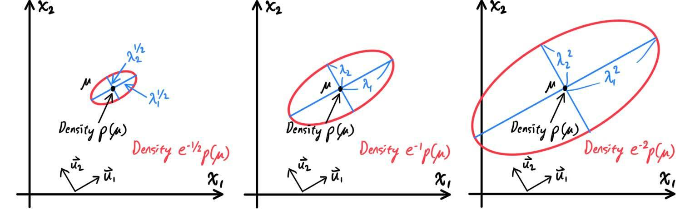
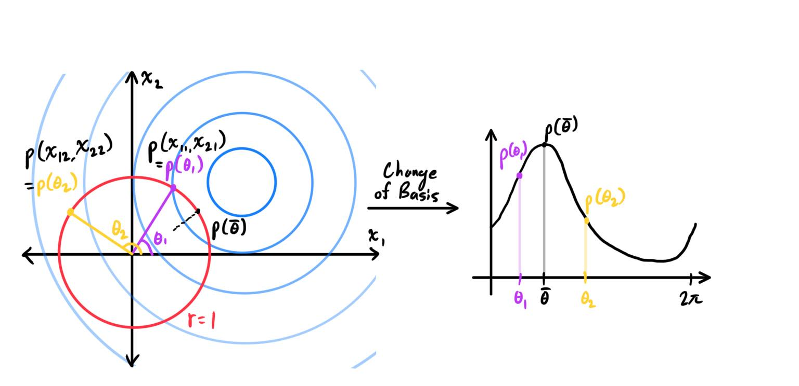
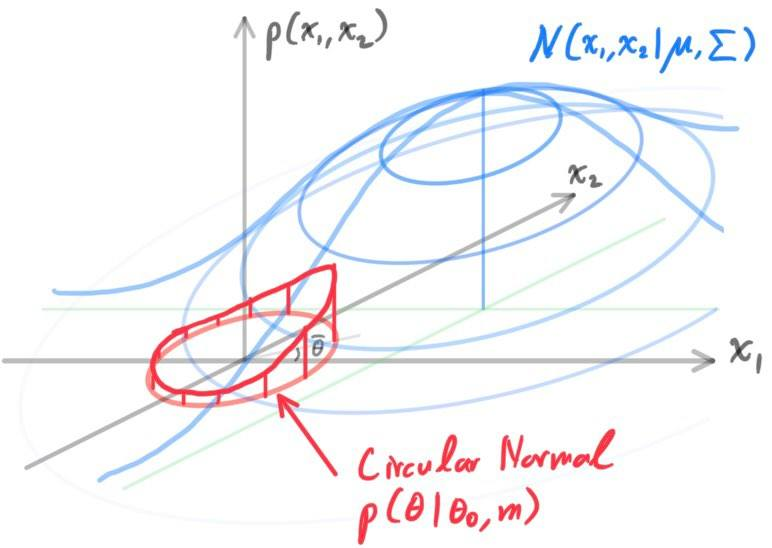
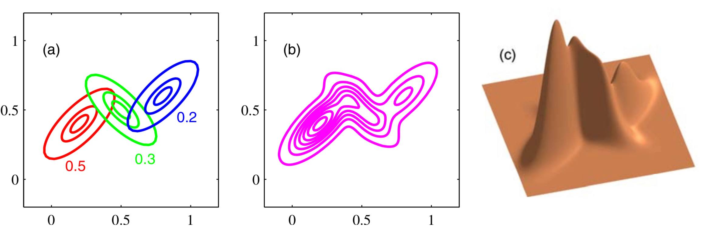
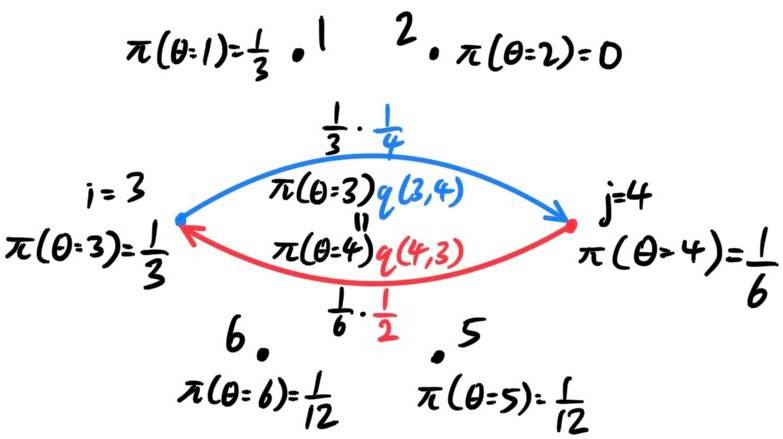
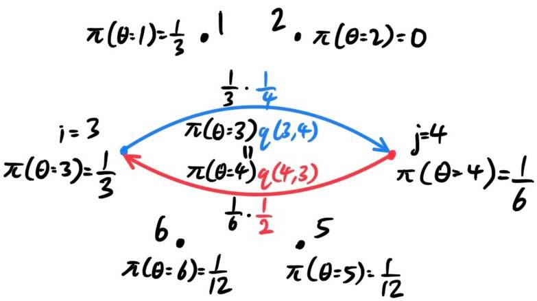
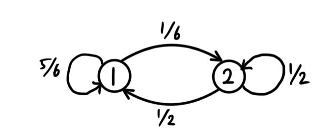
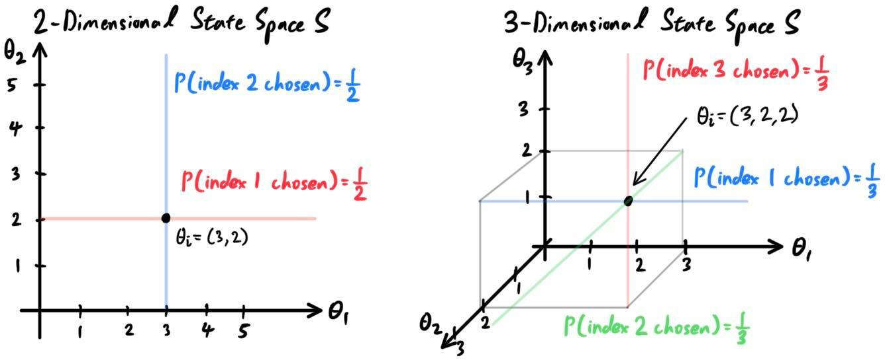
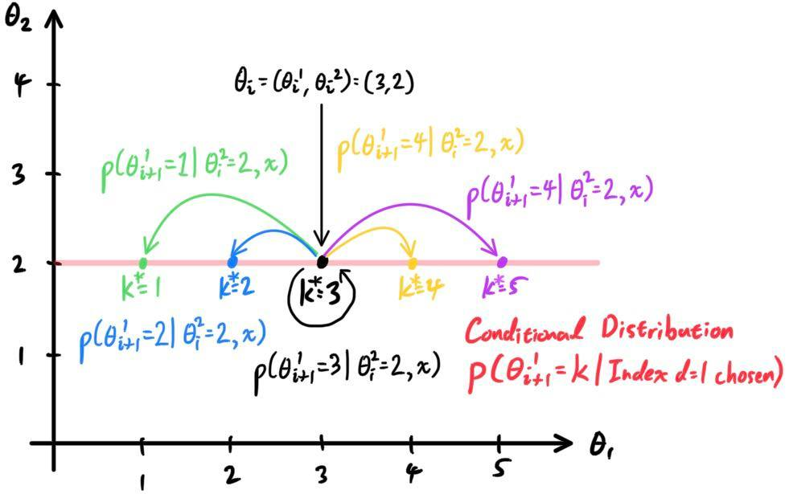
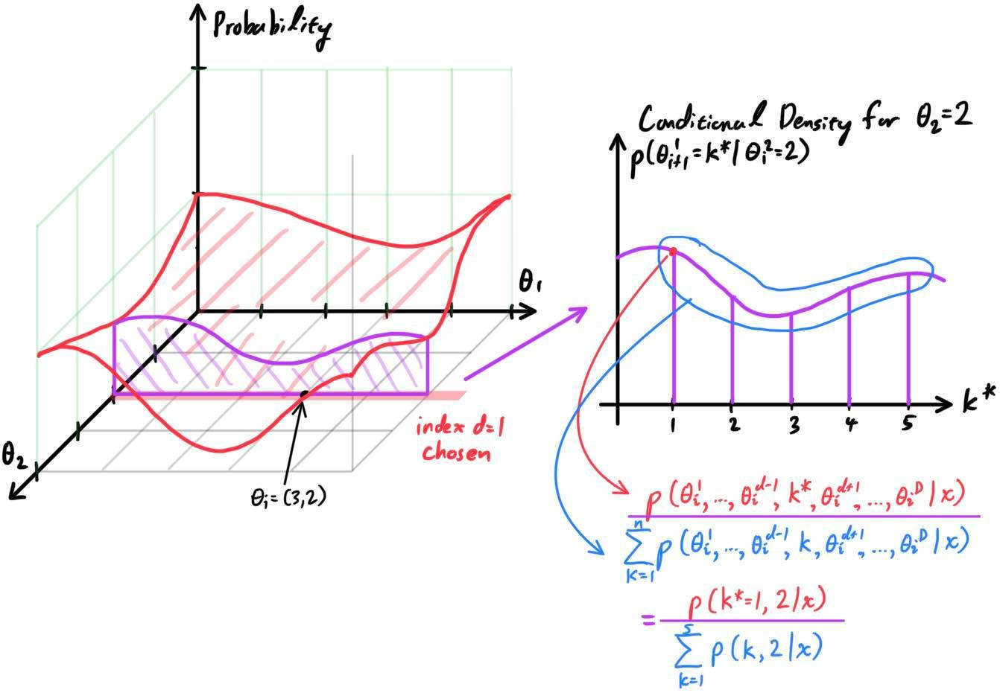

Statistics
Contents
Classical vs Bayesian Statistics
While traditional epistemology attempts to explain the basis of knowledge as justified true beliefs, Bayesian epistemology backs the idea that beliefs can be interpreted as subjective probabilities. As such, they are subject to the laws of probability theory, which act as the norms of rationality.
Probability Densities
[Hide]Notation: Probability Densities & Sampling
We will introduce some basic probability concepts. A $d$-dimensional random variable $X$ is any stochastic $d$-vector that can be "generated" or "realized" from an outcome space $\Omega$. That is, the random variable $X$ would randomly pick an element in $\Omega$. The uncertainty of these possible values generated by the random variables is specified by some distribution $\text{Dist}$ with some parameter $\theta$.
\[X \sim \text{Dist}(\theta)\]
In this case, $\text{Dist}$ is called a $d$-dimensional distribution. The probability density function of the random variable $X$ can be written in many forms and may define different things, depending on context. Generally, if we do not include the parameter $\theta$ in the density expression, then we assume that it is fixed.
- $\text{Dist}(x\,|\,\theta)$ or $\text{Dist}(x;\, \theta)$ tells us the probability of the random variable (following distribution $\text{Dist}$) will generate value $x$, given some fixed $\theta$. Note that this notation allows us to write densities without having to explicitly name a random variable, e.g. by saying "let $X \sim \text{Dist}$ be a random variable."
- If we have defined the distribution of the random variable $X$, we generally treat $p_X (x) = p_X (x;\, \theta) = \text{Dist}(x\,|\,\theta)$.
- Sometimes, we replace the $p$ with an $f$, and call $f_X (x) = f(x;\,\theta) = \text{Dist}(x\,|\, \theta)$.
- If $\Omega$ is discrete, then we can assume that $X$ generates discrete $x^{(i)} \in \Omega \subset \mathbb{N}^d$. In the discrete case, the sum of all probabilities equals $1$. \[\sum_{x \in \Omega} x \, p_X (x) = 1\]
- If $\Omega$ is continuous, then we assume that $X$ generates real-valued $x^{(i)} \in \Omega \subset \mathbb{R}^d$. In the continuous case, the integral of all probabilities equals $1$. \[\int_{x \in \Omega} x \, p_X (x) = 1\]
Bayes' Rule
We have seen that Bayesian statistics depends on having some initial belief about an event. Upon some observation, we can gain some sort of information about the event, allowing us to modify our prior distribution to a new one, called the posterior distribution. This simple property is the reason why Bayesian statistics is so useful for machine learning. The way we do this is through Bayes' Rule, which states
\[p(H\,|\,D) = \frac{p(D\,|\,H) \; p(H)}{p(D)}\]
Note that
There are multiple ways to write Bayes rule. When attempting to calculate the posterior, we can see that $p(D)$ is really just a normalization constant and therefore does not affect the type of distribution the posterior is. So, we can in effect write the above as \[p(H\,|\,D) \propto p(D\,|\,H)\; p(H)\] or \[\text{Posterior } \propto \text{ Prior } \times \text{ Likelihood}\] where the $\propto$ symbol means "proportional to." We use this notation more often when calculating posteriors since the normalizing constant isn't as important as finding the shape of the posterior density.
- $H$ is the hypothesis whose probability may be affected by data $D$, also called evidence.
- $p(H)$ is the prior distribution, our initial hypothesis of what the distribution would have been.
- $p(H\,|\,D)$ is the posterior distribution, which was determined upon observing the event $B$.
- $p(D\,|\,H)$ is the likelihood. If you were to assume that $A$ is true, then the likelihood tells you the probability of getting result $B$.
- $p(D)$ is the marginal likelihood, which is calculated by conditioning on $A$ \[p(D) = \sum_H p(D\,|\,H)\; p(H) \text{ or } p(D) \int_H p(D\,|\,H)\; p(H) \, dH\]
There are multiple ways to write Bayes rule. When attempting to calculate the posterior, we can see that $p(D)$ is really just a normalization constant and therefore does not affect the type of distribution the posterior is. So, we can in effect write the above as \[p(H\,|\,D) \propto p(D\,|\,H)\; p(H)\] or \[\text{Posterior } \propto \text{ Prior } \times \text{ Likelihood}\] where the $\propto$ symbol means "proportional to." We use this notation more often when calculating posteriors since the normalizing constant isn't as important as finding the shape of the posterior density.
Bernoulli, Binomial Distributions
The Bernoulli distribution $\text{Bernoulli}(p)$, parameterized by a single number $p$ (probability of success) and defined over 1-dimensional $\Omega = \{0, 1\}$, has density
\[\text{Bernoulli}(x\,|\,p) = p^x\,(1 - p)^{1 - x}, \;\;\;\;\;\; x \in \Omega = \{0, 1\}\]
The binomial distribution $\text{Binomial}(N, p)$, parameterized by $N$ (number of trials) and $p$ (probability of success), defined over 1-dimensional $\Omega = \{0, 1, \ldots, N\}$, has density
\[\text{Binomial}(x\,|\,N, p) = \binom{N}{x} p^x (1 - p)^{N - x} \]
It is a common fact that given iid $X_i \sim \text{Bernoulli}(p), i = 1, \ldots, N$, the sum of them
\[Y = \sum_{i=1}^N X_i\]
is a $\text{Binomial}(N, p)$ random variable.
Uniform, Beta Distribution
The uniform distribution $\text{Uniform}(a, b)$, parameterized by the two endpoints of the interval $(a, b) \subset \Omega = \mathbb{R}$, has density
\[\text{Uniform}(x\,|\,a, b) = \frac{1}{b-a} \text{ for } a \leq x \leq b\]
In practice, we also write it in proportions if we do not care about the normalization constant $c$. So, equivalently, $\text{Uniform}(x\,|\,a, b) \propto 1$.
The Beta distribtion $\text{Beta}(a, b)$ is a generalization of the uniform and Bernoulli distributions, with parameters $a, b$, defined over $\Omega = [0, 1]$, and with density \[\text{Beta}(x\,|\,a, b) = \frac{\Gamma(a + b)}{\Gamma(a) \Gamma(b)} x^{a-1} (1-x)^{b-1} = \frac{x^{a -1} (1 - x)^{b-1}}{\int_0^1 x^{a-1} (1-x)^{b-1}}\,dx\] or in simpler form depending only on proportionality, \[\text{Beta}(x\,|\,a, b) \propto x^{a - 1} (1 - x)^{b-1}\]
The Beta distribtion $\text{Beta}(a, b)$ is a generalization of the uniform and Bernoulli distributions, with parameters $a, b$, defined over $\Omega = [0, 1]$, and with density \[\text{Beta}(x\,|\,a, b) = \frac{\Gamma(a + b)}{\Gamma(a) \Gamma(b)} x^{a-1} (1-x)^{b-1} = \frac{x^{a -1} (1 - x)^{b-1}}{\int_0^1 x^{a-1} (1-x)^{b-1}}\,dx\] or in simpler form depending only on proportionality, \[\text{Beta}(x\,|\,a, b) \propto x^{a - 1} (1 - x)^{b-1}\]
Poisson, Gamma Distributions
The Poisson distribution $\text{Poisson}(\lambda)$, parameterized by $\lambda$ (rate, e.g. of a random time process) and outcome space $\Omega = \mathbb{N}_0$, has the density
\[\text{Poisson}(x\,|\,\lambda) = \frac{\lambda^x e^{-\lambda}}{x!}\]
The Gamma distribution $\text{Gamma}(a, b)$, parameterized by $a$ (shape) and $b$ (rate) and outcome space $\Omega = (0, \infty)$, has the density
\[\text{Gamma}(x\,|\,a, b) = \frac{b^a}{\Gamma(a)} x^{a-1} e^{-bx}\]
Exponential, Geometric Distributions
The exponential distribtion $\text{Exp}(\lambda)$, parameterized by $\lambda$ (rate, or inverse scale) and outcome space $\Omega = [0, \infty)$, has density
\[\text{Exp}(x\,|\,\lambda) = \lambda e^{-\lambda x}\]
The geometric distribution $\text{Geometric}(p)$, parameterized by $p$ (probability of success) and outcome space $\Omega = \{1, 2, \ldots\}$, has density
\[\text{Geometric}(x\,|\,p) = (1 - p)^{k-1} p\]
Multinomial & Dirichlet Distributions
The multinomial distribution $\text{Multinomial}(p_1, p_2, \ldots, p_K)$ has $K-1$ parameters (since the $p_i$'s must sum to $1$) is defined over $\{1, 2, \ldots, K\}$, but another conventional outcome space consists of the $K$ unit vectors in $\mathbb{R}^K$. We will call the collection of $p_i$ parameters $\theta$. That is,
\[\Omega = \Bigg\{ \begin{pmatrix} 1 \\ 0 \\ \vdots \\ 0 \end{pmatrix}, \begin{pmatrix} 0 \\ 1 \\ \vdots \\ 0 \end{pmatrix}, \ldots \begin{pmatrix} 0 \\ 0 \\ \vdots \\ 1 \end{pmatrix}\Bigg\}\]
With this outcome space, we can conveniently define the density as
\[\text{Multinomial}(x\,|\,p_1, \ldots, p_K) = \prod_{k=1}^K p_k^{x_k}\]
which will give $\text{Multinomial}(k\,|\,p_1, \ldots, p_K) = p_k$ for all $k \in \Omega$. Now considering a data set $\mathbf{x}$ of $N$ independent observations $x^{(1)}, \ldots, x^{(N)}$ (with each $x^{(n)} \in \Omega$), the corresponding likelihood function takes the form
\[p(\mathbf{x}\,|\,\theta) = \prod_{n=1}^N p(x^{(n)}\,|\,\theta) = \prod_{n=1}^N \prod_{k=1}^K p_k^{x^{(n)}_k} = \prod_{k=1}^K p_k^{\sum_n x^{(n)}_k} = \prod_{k=1}^K p_k^{m_k}\]
Therefore, the likelihood function depends on the $N$ data points only through the $K$ quantities
\[m_k = \sum_n x^{(n)}_k\]
which each represent the number of success observations for $k$. These are called the sufficient statistics for this distribution.
Laplace
The Laplace distribution $\text{Laplace}(\mu, \beta)$, with parameters $\mu$ (center) and $\beta$ (scale) and outcome space $\Omega = \mathbb{R}$, has density of form
\[\text{Laplace}(x\,|\, \mu, \beta) = \frac{1}{2b} \exp\bigg( - \frac{|x - \mu|}{b} \bigg)\]
It is also called the double exponential distribution since it can be thought of as two exponential distributions spliced together back to back.
Gaussian Distribution
The univariate Gaussian distribution $\mathcal{N}(\mu, \sigma^2)$, with parameters $\mu$ (average) and $\sigma^2$ (variance) and outcome space $\Omega = \mathbb{R}$, has density of form
\[\mathcal{N}(x\,|\,\mu, \sigma^2) = \frac{1}{\sqrt{2 \pi \sigma^2}} \exp \bigg( -\frac{1}{2 \sigma^2} (x - \mu)^2 \bigg)\]
The $D$-dimensional Gaussian distribution $\mathcal{N}_d(\mu, \Sigma)$ with parameters $\mu$ (average $D$-vector) and $\Sigma$ ($D \times D$ symmetric positive-definite covariance matrix) and outcome space $\Sigma = \mathbb{R}^D$, takes the form
\[\mathcal{N}_D (x\,|\,\mu, \Sigma) = \frac{1}{(2\pi)^{D/2}} \frac{1}{|\Sigma|^{1/2}} \exp \bigg(-\frac{1}{2} (x - \mu)^T \Sigma^{-1} (x - \mu)\bigg)\]
The Gaussian is so important because the central limit theorem (CLT) states that, subject to mild conditions, the sum of a set of random variables has a distribution that converges to the Gaussian. The functional dependence of the Gaussian on $x$ is through the quadratic form
\[\Delta^2 = (x - \mu)^T \Sigma^{-1} (x - \mu) \]
which appears in the exponent. This quantity $\Delta$ is called the Mahalanobis distance from $\mu$ to $x$ and reduces to the Euclidean distance when $\Sigma = I$. Remember that since $\Sigma$ is symmetric, it can be decomposed into $n$ orthonormal eigenspaces of dimension $1$ with corresponding eigenvalues $\lambda_i$. The eigendecomposition of $\Sigma$ is
\[\Sigma = \sum_{i=1}^D \lambda_i u_i u_i^T\]
and its inverse covariance matrix, called the precision matrix, is
\[\Sigma^{-1} = \sum_{i=1}^D \frac{1}{\lambda_i} u_i u_i^T\]
To visualize this, we can imagine a $D$-dimensional ellipsoid in $\mathbb{R}^D$ representing a surface of constant probability for a $D$-dimensional Gaussian. The major axes of the ellipsoid are defined by the eigenvectors $u_i$, each stretched by a factor of its corresponding eigenvalues $\lambda_i$.

We can interpret the equipotential lines as such: Given that the density value at the peak $\mu$ is $p(\mu)$,
- The densities of $x$ on the equipotential ellipse with semimajor axes lengths $\lambda_1^{1/2}, \lambda_2^{1/2}, \ldots, \lambda_D^{1/2}$ centered at $\mu$ is $e^{-1/2} p(\mu)$. (Left)
- The densities of $x$ on the equipotential ellipse with semimajor axes lengths $\lambda_1, \lambda_2, \ldots, \lambda_D$ centered at $\mu$ is $e^{-1} p(\mu)$. (Center)
- The densities of $x$ on the equipotential ellipse with semimajor axes lengths $\lambda_1^2, \lambda_2^2, \ldots, \lambda_D^2$ centered at $\mu$ is $e^{-2} p(\mu)$. (Right)
Joint & Marginal Gaussian Distributions
Cauchy & Student's t-Distribution
The student's t-distribution, parameterized by $\mu$ (mean), $\lambda$ (precision), and $\nu$ (degrees of freedom) and outcome space $\Omega = \mathbb{R}$, has the density
\[\text{St}(x\,|\,\mu, \lambda, \nu) = \frac{\Gamma(\frac{\nu + 1}{2})}{\Gamma(\frac{\nu}{2})} \; \bigg(\frac{\lambda}{\pi \nu} \bigg)^{1/2} \bigg( 1 + \frac{\lambda (x - \mu)^2}{\nu} \bigg)^{-\frac{\nu + 1}{2}}\]
We can interpret it as being roughly similar to a Gaussian, but with heavier tails. Furthermore, as $\nu \rightarrow \infty$, the t-distribution $\text{St}(x\,|\,\mu, \lambda, \nu)$ becomes a Gaussian $\mathcal{N}(x\,|\,\mu, \lambda^{-1})$ with mean $\mu$ and precision $\lambda$.
For the particular case of $\nu = 1$, the t-distribution reduces to a Cauchy distribution.
For the particular case of $\nu = 1$, the t-distribution reduces to a Cauchy distribution.
Inference: Parameter Estimation
[Hide]
Descriptive statistics is a summary statistic that quantitatively describes or summarizes features from a collection of samples $\{x^{(i)}\}$. It is extremely useful, but quite boring. However, inferential statistics is a different story. Given a set of samples $\{x^{(i)}\}_{i=1}^n$, we may have to try to predict/infer either which distribution $X$ these samples came from, or if we know the distribution, what its parameters $\theta$ are. This is called an inference problem, and we approach it by constructing and refining a statistical model that we assume the data has been generated from. Assuming that we know what distribution (but not the parameter $\theta$) the $x^{(i)}$'s come from, we can do 2 things:
- Frequentist inference tells us to find the likelihood function \[L(\theta) = p(\mathbf{x}\,|\,\theta)\] which is a function of $\theta$. The function $L$ tells us that given that we know $\theta$, what the probability of sampling $\mathbf{x}$ is. Clearly the value of $\theta$ that maximizes $L$ represents the best statistical model.
- Bayesian inference tells us to find the desired posterior distribution $p(\theta\,|\,\mathbf{x})$ by assuming a reasonable prior, determining the likelihood, and multiplying them together using Bayes rule. \[p(\theta\,|\,\mathbf{x}) \propto p(\theta)\; p(\mathbf{x}\,|\,\theta) = f(\theta)\] Finding the maximum of this function $f(\theta)$ that is proportional to $p(\theta\,|\,\mathbf{x})$ with respect to $\theta$ is the best statistical model. But unlike the frequentist approach, we have an entire distribution to work with. It tells us that given this data $\mathbf{x}$, what is the probability that the parameter value of the statistical model is $\theta$, for all $\theta$.
Computing Posteriors with Beta Prior and Binomial Likelihood
The motivation behind the Beta distribution is that it satisfies conjugacy with a binomial likelihood. That is, assume that we have some data $\mathbf{x}$ of $N$ observations containing $m$ successes and $N-m$ failures (note that this observation $\mathbf{x}$ was in a way "reduced" to the information of only the number of successes $m$). We assume that there is some true success rate $\theta$ (between $0$ and $1$, of course) coming from these samples, and our job is to try and guess the true rate to the best of our abilities. Before we even observe the data $\mathbf{x}$, our initial guess of $\theta$ might be modeled by the prior distribution $\theta \sim \text{Beta}(a, b)$. Furthermore, the likelihood is clearly a binomial (since it represents the probability of getting $m$ successes out of $N$ samples with fixed rate of success $\theta$), so $m\,|\,\theta \sim \text{Binomial}(N, \theta)$. With these conditions, we claim that the posterior is also a beta, since
\begin{align*}
p(\theta\,|\, m) & \propto p_\theta (\theta) \, m\,|\,\theta) \\
& \propto \theta^{a - 1} (1 - \theta)^{b - 1} \cdot \theta^m (1 - \theta)^{N - m} \\
& = \theta^{a + m - 1} (1 - \theta)^{b + N - m - 1}
\end{align*}
which gives a density of the random variable $\theta\,|\,m \sim \text{Beta}(a + m, \beta + N - m)$. Let us introduce an example. Say that you moved into a new city and are waiting at the bus stop. You want to find out the probability $\theta$ that any bus successfully goes to your workplace, and after taking 5 random buses, you see that 2 out of the 5 does arrive at the destination. In this case, we see that
If our goal is to predict, as best we can, the outcome of the next trial (which is Bernoulli by assumption), then we must evaulate the predictive distribution of $x$, given the observed data set $\mathbf{x}$. We can calculate it \[\text{Bernoulli}(x = 1\,|\,\mathbf{x}) = \int_0^1 \text{Bernoulli}(x = 1\,|\,\theta) \, p(\theta\,|\, \mathbf{x}) \, d\theta = \int_0^1 \theta p(\theta\,|\,\mathbf{x})\,d\theta = \mathbb{E}(\theta\,|\,\mathbf{x})\]
- $\theta$ is the parameter that we wish to estimate.
- $m$ is the data/evidence that $m=2$ out of the $N=5$ buses arrives at the destination.
- If we have no clue what the actual proportion of buses arriving actually go to the workplace, we can assume the prior to be \[\theta \sim \text{Uniform}(0, 1) \implies p(\theta) = \begin{cases} 1 & 0 \leq \theta \leq 1 \\ 0 & \text{else} \end{cases} \]
- If we think that there should be more weight to the extreme solutions for when $\theta$ is close to $0$ or $1$, then we can use the prior \[p(\theta) \propto \theta^{-\frac{1}{2}} (1 - \theta)^{-\frac{1}{2}} \text{ for } 0 \leq \theta \leq 1\]
- If we already had a lot of information that suggested that $\theta$ was probably close to $0.5$, then we would use the prior \[p(\theta) \propto \theta^{100} (1 - \theta)^{100} \text{ for } 0 \leq \theta \leq 1\]
- for the uniform prior, \begin{align*} p(\theta\,|\,m) & \propto 1 \cdot \binom{N}{m} \theta^m (1 - \theta)^{N - m} \\ & \propto \theta^m (1 - \theta)^{N - m} \\ p(\theta\,|\,m) & \propto \theta^2 (1 - \theta)^{3} \end{align*}
- for the extreme value-weighed prior, \begin{align*} p(\theta\,|\,m) & \propto \theta^{-\frac{1}{2}} (1 - \theta)^{-\frac{1}{2}} \cdot \binom{N}{m} \theta^m (1 - \theta)^{N-m} \\ & \propto \theta^{m - \frac{1}{2}} (1 - \theta)^{N - m - \frac{1}{2}} \\ p(\theta\,|\,m) & \propto \theta^{\frac{3}{2}} (1 - \theta)^{\frac{5}{2}} \end{align*}
- for the average weighed prior, \begin{align*} p(\theta\,|\,m) & \propto \theta^{100} (1 - \theta)^{100} \cdot \binom{N}{m} \theta^m (1 - \theta)^{N-m} \\ & \propto \theta^{m + 100} (1 - \theta)^{N - m + 100} \\ p(\theta\,|\,m) & \propto \theta^{102} (1 - \theta)^{103} \end{align*}
If our goal is to predict, as best we can, the outcome of the next trial (which is Bernoulli by assumption), then we must evaulate the predictive distribution of $x$, given the observed data set $\mathbf{x}$. We can calculate it \[\text{Bernoulli}(x = 1\,|\,\mathbf{x}) = \int_0^1 \text{Bernoulli}(x = 1\,|\,\theta) \, p(\theta\,|\, \mathbf{x}) \, d\theta = \int_0^1 \theta p(\theta\,|\,\mathbf{x})\,d\theta = \mathbb{E}(\theta\,|\,\mathbf{x})\]
Maximal Likelihood for Gaussians & Sequential Estimation
Given a data set $\mathbf{X} = \{\mathbf{x}_1, \mathbf{x}_2, \ldots, \mathbf{x}_N \}$ in which the observations $\{\mathbf{x}_N\}$ are drawn independently from a multivariate Gaussian distribution, we can estimate the parameters of the distributions by maximum likelihood. The log likelihood function is given by
\[\ln\, p(\mathbf{X}\,|\,mu, \Sigma) = -\frac{ND}{2}\ln(2 \pi) - \frac{N}{2} \ln|\Sigma| - \frac{1}{2} \sum_{n=1}^N (x_n - \mu)^T \Sigma^{-1} (x_n - \mu) \]
By simple rearrangement, we see that the likelihood function depends on the data set only through the two quantities
\[\sum_{n=1}^N x_n \text{ and } \sum_{n=1}^N x_n x_n^T\]
which are known as the sufficient statistics for the Gaussian distribution. Skipping calculations, the maximum likelihood estimate of the mean is simply the mean of the observed set of data points, while that of the covariarance matrix is:
\[\mu_{ML} = \frac{1}{N} \sum_{n=1}^N x_n, \;\;\;\;\; \Sigma_{ML} = \frac{1}{N} \sum_{n=1}^N (x_n - \mu_{ML}) (x_n - \mu_{ML})^T\]
If we evaluate the expectations of the maximum likelihood solutions under the true distribution, we obtain the following results
\begin{align*}
\mathbb{E} \big( \mu_{ML} \big) & = \mu \\
\mathbb{E} \big( \Sigma_{ML} \big) & = \frac{N-1}{N} \Sigma
\end{align*}
The expectation of the maximum likelihood estimate for the mean is equal to the true mean. However, the maximum likelihood estimate for the covariance has an expectation that is less than the true value. (Why?)
The likelihood function can be derived sequentially, where we maximize the likelihood estimate of the distribution parameters incrementally, after every data point $\mathbf{x}_i$. Consider the result for the maximum likelihood estimator of the mean $\mu_{ML}$, which we will denote by $\mu_{ML}^{(N)}$, when based on $N$ observations. If we dissect out the contribution from the final data point $x_N$, we obtain \begin{align*} \mu_{ML}^{(N)} & = \frac{1}{N} \sum_{n=1}^N x_n \\ & = \frac{1}{N} x_N + \frac{1}{N} \sum_{n=1}^{N-1} x_n \\ & = \frac{1}{N} x_N + \frac{N-1}{N} \mu_{ML}^{(N-1)} \\ & = \mu_{ML}^{(N-1)} + \frac{1}{N} (x_N - \mu_{ML}^{(N-1)}) \end{align*} In words, after observing $N-1$ data points we have estimated $\mu$ by $\mu_{ML}^{(N-1)}$. We now observe data point $x_N$, and we obtain our revised estimate $\mu_{ML}^{(N)}$ by moving the old estimate a small amount, proportional to $1/N$, in the direction of the error signal $(x_N - \mu_{ML}^{(N-1)})$.
The likelihood function can be derived sequentially, where we maximize the likelihood estimate of the distribution parameters incrementally, after every data point $\mathbf{x}_i$. Consider the result for the maximum likelihood estimator of the mean $\mu_{ML}$, which we will denote by $\mu_{ML}^{(N)}$, when based on $N$ observations. If we dissect out the contribution from the final data point $x_N$, we obtain \begin{align*} \mu_{ML}^{(N)} & = \frac{1}{N} \sum_{n=1}^N x_n \\ & = \frac{1}{N} x_N + \frac{1}{N} \sum_{n=1}^{N-1} x_n \\ & = \frac{1}{N} x_N + \frac{N-1}{N} \mu_{ML}^{(N-1)} \\ & = \mu_{ML}^{(N-1)} + \frac{1}{N} (x_N - \mu_{ML}^{(N-1)}) \end{align*} In words, after observing $N-1$ data points we have estimated $\mu$ by $\mu_{ML}^{(N-1)}$. We now observe data point $x_N$, and we obtain our revised estimate $\mu_{ML}^{(N)}$ by moving the old estimate a small amount, proportional to $1/N$, in the direction of the error signal $(x_N - \mu_{ML}^{(N-1)})$.
Bayesian Inference for Gaussian
The maximum likelihood framework gave point estimates for the parameters $\mu$ and $\Sigma$. Now we develop a Bayesian treatment by introducing prior distributions over these parameters. Given a set of $N$ $D$-dimensional observations $\mathbf{X} = \{x_1, \ldots, x_n\}$, the likelihood function is given by (the unnormalized function of $\mu$):
\[p(\mathbf{X}\,|\,\mu, \Sigma) = \prod_{n=1}^N p(x_n\,|\,\mu, \Sigma) = \frac{1}{(2\pi)^{D/2}} \frac{1}{|\Sigma|^{1/2}} \exp \sum_{n=1}^N \bigg(-\frac{1}{2} (x_n - \mu)^T \Sigma^{-1} (x_n - \mu)\bigg)\]
The likelihood function takes the form of the exponential of a quadratic form in $\mu$. Thus, if we choose a prior $p(\mu)$ given by a Gaussian, it will be a conjugate distribution for this likelihood function. Taking our prior distribution to be
\[p(\mu, \Sigma) = \mathcal{N}(\mu, \Sigma\,|\,\mu_0, \Sigma_0\]
The similarity of the symbols $\mu, \Sigma$ with $\mu_0, \Sigma_0$ may be slightly confusing. We can think as such: $\mu, \Sigma$ are random variables that determine the paramters of some Gaussian distribution. But the values $\mu, \Sigma$ are uncertain, and their possible values with probabilities take the form of another distribution $\mathcal{N}(\mu_0, \Sigma_0)$. The posterior distribution is given by the familiar formula
\[p(\mu, \Sigma\,|\,\mathbf{X}) \propto p(\mathbf{X}\,|\,\mu, \Sigma) \; p(\mu, \Sigma)\]
which is another Gaussian $p(\mu\,|\,\mathbf{X}) = \mathcal{N}(\mu, \Sigma\,|\, \mu_N, \Sigma_N)$. Let us place a few conditions for simplification. Since every Gaussian density can be represented as a product of independent univariate Gaussians, we can work with univariate Gaussians. Furthermore, let us assume that the true value of $\sigma$ is known, so all we have to do is find the posterior distribution of $\mu$ using the prior density $\mathcal{N}(\mu\,|\,\mu_0, \sigma_0^2)$. We have our prior and likelihood to be the following. Note that while the likelihood distribution is pretty much given, we have the flexibility to choose what our prior distribution is. We have only set the prior as a Gaussian simply because it is a conjugate form and therefore will greatly simplify calculations.
\begin{align*}
p(\mu) & = \mathcal{N}(\mu\,|\,\mu_0, \sigma_0^2) = \frac{1}{\sqrt{2 \pi \sigma^2}} \exp\bigg(-\frac{1}{2\sigma^2} (\mu - \mu_0)^2) \bigg) \\
p(\mathbf{X}\,|\,\mu) & = \prod_{n=1}^N p(x_n\,|\,\mu) = \frac{1}{(2 \pi \sigma^2)^{N/2}} \exp\bigg(-\frac{1}{2 \sigma^2} \sum_{n=1}^N (x_n - \mu)^2 \bigg)
\end{align*}
which gives a posterior $p(\mu\,|\,\mathbf{X}) = \mathcal{N}(\mu \,|\, \mu_N \sigma_N^2)$ where
\begin{align*}
\mu_N & = \frac{\sigma^2}{N \sigma_0^2 + \sigma^2} \mu_0 + \frac{N \sigma_0^2}{N \sigma_0^2 + \sigma^2} \mu_{ML} \\
\frac{1}{\sigma_N^2} & = \frac{1}{\sigma_0^2} + \frac{N}{\sigma^2}
\end{align*}
and $\mu_{ML}$ is the maximum likelihood solution for $\mu$ give by the sample mean $\mu_{ML} = \frac{1}{N} \sum_{n=1}^N x_n$. These values makes sense. We can see that the mean of the posterior distribution $\mu_N$ is a compromise between the prior mean $\mu_0$ and maximum likelihod solution $\mu_{ML}$. If the number of observed data points $N=0$, then it is simply the prior mean, but for $N \rightarrow \infty$, the posterior mean is given by the maximum likelihood solution since the data "overpowers" the prior mean assumption.
Now, suppose that the mean of the Gaussian over the data is known and we wish to infer the variance. For convenience, let us work with the precision $\lambda = \frac{1}{\sigma^2}$ over the variance. The likelihood function for $\lambda$ is \[p(\mathbf{X}\,|\,\lambda) = \prod_{n=1}^N \mathcal{N} (x_n\,|\, \mu, \lambda^{-1}) \propto \lambda^{N/2} \exp \bigg(-\frac{\lambda}{2} \sum_{n=1}^N (x_n - \mu)^2 \bigg)\] Note that since this is a function of $\lambda$, it behaves differently than the likelihood function of $\mu$, even though they are of the same form. Since the likelihood function is proportional to the product of a power of $\lambda$ and the exponential of a linear function of $\lambda$, we must find a prior distribution $p(\lambda)$ with precisely these proportional properties identical to that of the likelihood. Fortunately, the Gamma distribution satisfies them, defined by \[p(\lambda\,|\,a_0, b_0) = \text{Gamma}(\lambda\,|\, a_0, b_0) = \frac{1}{\Gamma(a_0)} b_0^{a_0} \lambda{a_0-1} \exp(-b_0 \lambda)\] Using Bayes rule and multiplying gives the posterior density \[p(\lambda\,|\,\mathbf{X}) \propto \lambda_{a_0 - 1} \lambda^{N/2} \exp\bigg( -b_0 \lambda - \frac{\lambda}{2} \sum_{n=1}^N (x_n - \mu)^2 \bigg)\] which is indeed the density of a $\text{Gamma}(\lambda\,|\,a_N, b_N)$ distribution, where \begin{align*} a_N & = a_0 + \frac{N}{2} \\ b_N & = b_0 + \frac{1}{2} \sum_{n=1}^N (x_n - \mu)^2 = b_0 + \frac{N}{2} \sigma_{ML}^2 \end{align*} where $\sigma_{ML}^2$ is the maximum likelihood estimator of the variance. Now, suppose that both the mean and precision are unknown. To find a conjugate prior, we consider the dependence of the likelihood function on $\mu$ and $\lambda$. \begin{align*} p(\mathbf{X}\,|\,\mu, \lambda) & = \prod_{n=1}^N \bigg(\frac{\lambda}{2\pi}\bigg)^{1/2} \exp \bigg( -\frac{\lambda}{2} (x_n - \mu)^2 \bigg) \\ & \propto \bigg(\lambda^{1/2} \exp \Big(-\frac{\lambda \mu^2}{2} \Big) \bigg)^N \, \exp \bigg( \lambda \mu \sum_{n=1}^N x_n - \frac{\lambda}{2} \sum_{n=1}^N x_n^2 \bigg) \end{align*} We now wish to identify a prior distributio $p(\mu, \lambda)$ that has the same functional dependence on $\mu$ and $\lambda$ as the likelihood function and that should therefore take the form \begin{align*} p(\mu, \lambda) & \propto \bigg( \lambda^{1/2} \exp \Big(-\frac{\lambda \mu^2}{2}\Big) \bigg)^\beta \exp\big( c \lambda \mu - d \lambda \big) \\ & = \exp \bigg( -\frac{\beta \lambda}{2} \Big(\mu - \frac{c}{\beta} \Big)^2 \bigg) \, \lambda^{\beta/2} \exp \bigg(-\Big(d - \frac{c^2}{2\beta}\Big) \lambda \bigg) \end{align*} where $c, d, \beta$ are constants. Since we can always write $p(\mu, \lambda) = p(\mu\,|\,\lambda) p(\lambda)$, we can find $p(\mu\,|\,\lambda)$ and $p(\lambda)$ by inspection. We have just shown that $p(\mu \,|\, \lambda)$ is a Gaussian whose precision is a linear function of $\lambda$ and that $p(\lambda)$ is a gamma distribution, so the normalized prior takes the form \[p(\mu, \lambda) = \mathcal{N}(\mu \,|\, \mu_0, (\beta\lambda)^{-1}) \; \text{Gamma}(\lambda\,|\,a, b)\] which is called the Gaussian-Gamma distribution. Note that this is not simply the product of an independent Gaussian prior over $\mu$ and a gamma prior over $\lambda$, because the precision of $\mu$ is a linear function of $\lambda$. The extension of this to multivariate random variables is straightforward.
Now, suppose that the mean of the Gaussian over the data is known and we wish to infer the variance. For convenience, let us work with the precision $\lambda = \frac{1}{\sigma^2}$ over the variance. The likelihood function for $\lambda$ is \[p(\mathbf{X}\,|\,\lambda) = \prod_{n=1}^N \mathcal{N} (x_n\,|\, \mu, \lambda^{-1}) \propto \lambda^{N/2} \exp \bigg(-\frac{\lambda}{2} \sum_{n=1}^N (x_n - \mu)^2 \bigg)\] Note that since this is a function of $\lambda$, it behaves differently than the likelihood function of $\mu$, even though they are of the same form. Since the likelihood function is proportional to the product of a power of $\lambda$ and the exponential of a linear function of $\lambda$, we must find a prior distribution $p(\lambda)$ with precisely these proportional properties identical to that of the likelihood. Fortunately, the Gamma distribution satisfies them, defined by \[p(\lambda\,|\,a_0, b_0) = \text{Gamma}(\lambda\,|\, a_0, b_0) = \frac{1}{\Gamma(a_0)} b_0^{a_0} \lambda{a_0-1} \exp(-b_0 \lambda)\] Using Bayes rule and multiplying gives the posterior density \[p(\lambda\,|\,\mathbf{X}) \propto \lambda_{a_0 - 1} \lambda^{N/2} \exp\bigg( -b_0 \lambda - \frac{\lambda}{2} \sum_{n=1}^N (x_n - \mu)^2 \bigg)\] which is indeed the density of a $\text{Gamma}(\lambda\,|\,a_N, b_N)$ distribution, where \begin{align*} a_N & = a_0 + \frac{N}{2} \\ b_N & = b_0 + \frac{1}{2} \sum_{n=1}^N (x_n - \mu)^2 = b_0 + \frac{N}{2} \sigma_{ML}^2 \end{align*} where $\sigma_{ML}^2$ is the maximum likelihood estimator of the variance. Now, suppose that both the mean and precision are unknown. To find a conjugate prior, we consider the dependence of the likelihood function on $\mu$ and $\lambda$. \begin{align*} p(\mathbf{X}\,|\,\mu, \lambda) & = \prod_{n=1}^N \bigg(\frac{\lambda}{2\pi}\bigg)^{1/2} \exp \bigg( -\frac{\lambda}{2} (x_n - \mu)^2 \bigg) \\ & \propto \bigg(\lambda^{1/2} \exp \Big(-\frac{\lambda \mu^2}{2} \Big) \bigg)^N \, \exp \bigg( \lambda \mu \sum_{n=1}^N x_n - \frac{\lambda}{2} \sum_{n=1}^N x_n^2 \bigg) \end{align*} We now wish to identify a prior distributio $p(\mu, \lambda)$ that has the same functional dependence on $\mu$ and $\lambda$ as the likelihood function and that should therefore take the form \begin{align*} p(\mu, \lambda) & \propto \bigg( \lambda^{1/2} \exp \Big(-\frac{\lambda \mu^2}{2}\Big) \bigg)^\beta \exp\big( c \lambda \mu - d \lambda \big) \\ & = \exp \bigg( -\frac{\beta \lambda}{2} \Big(\mu - \frac{c}{\beta} \Big)^2 \bigg) \, \lambda^{\beta/2} \exp \bigg(-\Big(d - \frac{c^2}{2\beta}\Big) \lambda \bigg) \end{align*} where $c, d, \beta$ are constants. Since we can always write $p(\mu, \lambda) = p(\mu\,|\,\lambda) p(\lambda)$, we can find $p(\mu\,|\,\lambda)$ and $p(\lambda)$ by inspection. We have just shown that $p(\mu \,|\, \lambda)$ is a Gaussian whose precision is a linear function of $\lambda$ and that $p(\lambda)$ is a gamma distribution, so the normalized prior takes the form \[p(\mu, \lambda) = \mathcal{N}(\mu \,|\, \mu_0, (\beta\lambda)^{-1}) \; \text{Gamma}(\lambda\,|\,a, b)\] which is called the Gaussian-Gamma distribution. Note that this is not simply the product of an independent Gaussian prior over $\mu$ and a gamma prior over $\lambda$, because the precision of $\mu$ is a linear function of $\lambda$. The extension of this to multivariate random variables is straightforward.
Inference over Periodic Distributions
Although Gaussian distributions are of great significance, there are situations in which they are inappropriate as density models for continuous variables (e.g. wind direction or quantities periodic over 24 hours). Such quantities are conveniently represented using an angular (polar) coordinate $0 \leq \theta < 2\pi$. Let us consider the problem of evaluating the mean of a set of observations $\mathbf{\theta} = \{\theta_1, \theta_2, \ldots, \theta_N\}$ of a periodic varialble measured in radians. The simple average $(\theta_1 + \ldots + \theta_N)/N$ is strongly coordinate dependent. To find an invariant measure of the mean, we can see that the observations can be viewed as points on the unit circle and can therefore be described instead by two-dimensional unit vectors $x_1, \ldots, x_N$, where $x_n = (\cos{\theta_n}, \sin{\theta_n})$. We can average these vectors and compute its angle to find this average angle.
\[\overline{x} = \frac{1}{N} \sum_{n=1}^N x_n = \Big( \frac{1}{N} \sum{n=1}^N \cos{\theta_n} , \frac{1}{N} \sum{n=1}^N \sin{\theta_n} \Big) \implies \overline{\theta} = \tan^{-1} \bigg( \frac{\sum_{n=1}^N \sin{\theta_n}}{\sum_{n=1}^N \cos{\theta_n}} \bigg)\]
In general, any distribution $p(\theta)$ that have period $2 \pi$ must be defined such that it is nonnegative, integrate to $1$, and be periodic.
\begin{align*}
p(\theta) & \geq 0 \\
\int_0^{2\pi} p(\theta)\,d\theta & = 1 \\
p(\theta + 2\pi) & = p(\theta)
\end{align*}
We can obtain a Guassian-like distribution that satisfies these three properties. Consider a 2-dimensional Gaussian over variables $x_1, x_2$ having mean $\mu = (\mu_1, \mu_2)$ and a covariance matrix $\Sigma = \sigma^2 I$. This gives us
\[p(x_1, x_2) = \frac{1}{2 \pi \sigma^2} \exp \bigg( -\frac{(x_1 - \mu_1)^2 + (x_2 - \mu_2)^2}{2 \sigma^2} \bigg)\]
Now, suppose that we consider the value of this distribution along a circle of fixed radius. Then, this distribution will be periodic , although it will not be normalized. We can determine the form of this distribution by transforming from Cartesian coordinates to polar coordinates $(r, \theta)$ (so that $x_1 = r \cos{\theta}, x_2 = r \sin{\theta}$) and keeping $r$ constant.

This transformation from $\mathbb{R}^2 \longrightarrow [0, 2 \pi)$ defined
\[(x_1, x_2) \mapsto \tan^{-1} \frac{y}{x}\]
simply takes the "circular" cross section of the Gaussian and maps those values. We can roughly visualize it as such:

The value of $r$ is not important so we assume $r=1$. With some algebra and trig identities, we have the circular normal, or von Mises distribution, of form
\[p(\theta\,|\,\theta_0, m) = \frac{1}{2 \pi I_0 (m)} \exp \big( m \cos(\theta - \theta_0) \big)\]
where the parameter $\theta_0$ corresponds to the mean of the distribution while $m$ is analogous to the precision for the Gaussian. The normalization coefficient $I_0 (m)$ is the zeroth-order Bessel function of the first kind, defined by
\[I_0 (m) = \frac{1}{2 \pi} \int_0^{2 \pi} \exp \big( m \cos{\theta}\big) \, d\theta\]
For large $m$, the distribution becomes approximately Gaussian. Considering the maximum likelihood estimators for the parameters $\theta_0$ and $m$ for the circular normal, the log likelihood function is given by
\[\ln p(\mathbf{\theta}\,|\, \theta_0, m) = - N \ln(2\pi) - N \ln \big( I_0 (m)\big) + m \sum_{n=1}^N \cos(\theta_n - \theta_0)\]
The maximum estimator for the mean is
\[\theta_{0}^{ML} = \tan^{-1} \bigg( \frac{\sum_n \sin{\theta_n}}{\sum_n \cos{\theta_n}} \bigg)\]
while that of $m$ can be evaluated numerically.
Mixtures of Gaussians
While the Gaussian distribution has important properties, it suffers from significant limitations when modeling real data sets. It is much more powerful to use Gaussian mixture models, which takes advantage of linear superpositions of Gaussians for better modeling. These mixtures can give rise to extremely complex densities, and they are so powerful that by using a sufficient number of Gaussians, almost any continuous density can be approximated to arbitrary accuracy. A mixture of 3 Gaussians is shown below.

A superposition of $K$ $D$-dimensional Gaussian densities is of the form
\[p(x) = \sum_{k=1}^K \pi_k \mathcal{N} (x\,|\, \mu_k, \Sigma_k)\]
each $D$-dimensional Gaussian density $\mathcal{N}(\mu_k, \Sigma_k)$ is called a component of the mixture, with its own mean $\mu_k$ and covariance $\Sigma_k$. The parameters $\pi_k$ are called mixing coefficients, with the property
\[\sum_{k=1}^K \pi_k = 1\]
They can be interpreted as a multinomial distribution reprsenting the probabilities of choosing one of the Gaussians. By conditioning, the marginal density is given by
\[p(x) = \sum_{k=1}^K p(k)\,p(x\,|\,k)\]
The right hand side saya that we can view $\pi_k = p(k)$ as the prior probability of picking the $k$th component, and the density $\mathcal{N}(x\,|\,\mu_k, \Sigma_k) = p(x\,|\,k)$ as the probability of $x$ conditioned on $k$. From Bayes rule, we have
\[p(k\,|\,x) = \frac{p(k)\, p(x\,|\,k)}{\sum_l p(l)\, p(x\,|\,l)} = \frac{\pi_k \mathcal{N}(x\,|\,\mu_k, \Sigma_k)}{\sum_l \mathcal{N}(x\,|\,\mu_l, \Sigma_l)}\]
The form of the Gaussian mixture distribution is governed by the parameters
\begin{align*}
\pi & = \{\pi_1, \pi_2, \ldots, \pi_K\} \\
\mu & = \{\mu_1, \mu_2, \ldots, \mu_K\} \\
\Sigma & = \{\Sigma_1, \Sigma_2, \ldots, \Sigma_K\}
\end{align*}
The log likelihood of this distribution is
\[L(\pi, \mu, \Sigma) = \ln p(\mathbf{X}\,|\,\pi, \mu, \Sigma) = \sum_{n=1}^N \ln \bigg( \sum_{k=1}^K \pi_k \mathcal{N} (x_n\,|\, \mu_k, \Sigma_k) \bigg)\]
where we have observations $\mathbf{X} = \{x_1, \ldots, x_n\}$. Since this function is much more complicated, we usually rely on numerical optimization techniques.
Exponential Family of Distributions
The probability distributions so far are contained within the exponential family of distributions, which have important properties in common. The exponential family of distributions over $x \in \Omega \subset \mathbb{R}^D$, given parameters $\eta$, is defined to be the set of distributions of the form
\[p(x\,|\,\eta) = h(x) g(\eta) \exp\big(\eta^T u(x)\big) \]
where $x$ may be a scalar or vector, discrete or continuous. Here, $\eta$ are called the natural parameters of the distribution, and $u(x)$ is some function of $x$. The function $g(\eta)$ can be interpreted as the normalizing coefficient and therefore satisfies
\[g(\eta) \int_{x \in \Omega} h(x) \exp\big(\eta^T u(x)\big) \, dx = 1\]
with the integration replaced by a summation if $x$ is discrete. See the Machine learning GLM section here for some examples. Now, consider a set of iid data denoted by $\mathbf{X} = \{x_1, \ldots, x_n\}$, for which the likelihood function is given by
\[p(X,|\,\eta) = \bigg( \prod_{n=1}^N h(x_n) \bigg) g(\eta)^N\, \exp \bigg( \eta^T \sum_{n=1}^N u(x_n) \bigg)\]
Setting the gradient of $\ln p(\mathbf{X}\,|\, \eta)$ with respect to $\eta$ to $0$, we can the following condition to be satisfied by the maximum likelihood estimator $\eta_{ML}$:
\[- \nabla \ln g(\eta_{ML}) = \frac{1}{N} \sum_{n=1}^N u(x_n)\]
which can in principle be solved to obtain $\eta_{ML}$. The solution for the maximum likelihood estimator depends on the data only through $\sum_n u(x_n)$, which is therefore called the sufficient statistic of this distribution. Therefore, we do not need to store the entire data set itself but its sufficient statistic.
In general, for a given probability distribution $p(\mathbf{X}\,|\, \eta)$, we can seek a prior that is conjugate to the likelihood function, so that the posterior distribution has the same functional form as the prior. Given that the likelihood function is in the exponential family, there exists a conjugate prior that can be written in the form \[p(\eta) = p(\eta\,|\, \chi, \nu) = f(\chi, \nu) g(\eta)^\nu \exp \big( \nu \eta^T \chi \big)\] where $f(\chi, \nu)$ is a normalization coefficient, and $g(\eta)$ is the same function as the one appearing in the exponential family form of likelihood function. Indeed, multiplying this conjugate with the exponential family likelihood gives \[p(\eta\,|\, \mathbf{X}, \chi, \nu) \propto g(\eta)^{\nu + N} \exp \Bigg( \eta^T \bigg( \sum_{n=1}^N u(x_n) + v \chi \bigg) \Bigg)\]
In general, for a given probability distribution $p(\mathbf{X}\,|\, \eta)$, we can seek a prior that is conjugate to the likelihood function, so that the posterior distribution has the same functional form as the prior. Given that the likelihood function is in the exponential family, there exists a conjugate prior that can be written in the form \[p(\eta) = p(\eta\,|\, \chi, \nu) = f(\chi, \nu) g(\eta)^\nu \exp \big( \nu \eta^T \chi \big)\] where $f(\chi, \nu)$ is a normalization coefficient, and $g(\eta)$ is the same function as the one appearing in the exponential family form of likelihood function. Indeed, multiplying this conjugate with the exponential family likelihood gives \[p(\eta\,|\, \mathbf{X}, \chi, \nu) \propto g(\eta)^{\nu + N} \exp \Bigg( \eta^T \bigg( \sum_{n=1}^N u(x_n) + v \chi \bigg) \Bigg)\]
Linear Regression
[Hide]
The previous chapter has been mostly on unsupervised learning, which attempts to take some data and infer some model that best fits them. A supervised learning problem is regression.
Bayesian Regression: Modeling with Hierarchical Priors
Given a training data set $\mathcal{D} = (\mathbf{X}, \mathbf{Y})$ comprised of $N$ pairs of observations with corresponding target variables $\{(x_i, y_i)\}_{i=1}^N$ ($x_i \in \mathbb{R}^D, y_i \in \mathbb{R}$), the goal is to predict the value of $y$ for a new value of $x$. We first construct a statistical model (more explained in next next subsection) by assuming that there exists some function $f(x)$ of some form such that the $y_i$'s have been generated by inputting the $x_i$'s into $f$, followed by a random residual term. We assume that the data $\mathcal{D}$ has been sampled independently, but this may not always be a justifiable assumption in practice. Under this model, which we denote $\mathcal{M}_i$, we further assume that $f$ can be parameterized by a vector $\theta$, so therefore, we assume that
\[y = f(x, \theta) + \epsilon, \;\;\;\;\;\; \epsilon \sim \text{Residual} (\beta)\]
where $\beta$ is some collection of parameters that determine the error function.
- The frequentist perspective reduces this problem to finding the value of $\theta$ that maximizes the likelihood. That is, we must find \[\theta^* = \text{arg}\, \max_{\theta} p(\mathcal{D}\,|\,\theta) = \text{arg}\, \max_{\theta} \prod_{i=1}^N p(y_i \,|\,x_i, \theta) \] and claiming that $y = f(x, \theta^*)$ is the function of best fit. This is a quite straightforward (hopefully convex) optimization problem, which can be done in many ways (e.g. batch/sequential gradient descent, solving normal equations, etc.).
- The Bayesian approach attempts to construct a distribution of the values of $\theta$. Clearly, this vector $\theta$ would be an element in some multidimensional Euclidean space, and we want to define a posterior density $p(\theta\,|\,\mathcal{D})$ across this space that tells us the probability of $\theta$. Using Bayes rule, \[p(\theta\,|\,\mathcal{D}) \propto p(\mathcal{D}\,|\,\theta) \, p(\theta) \] we see that we must define some prior distribution $p(\theta)$ on $\theta$. We can assume that this prior is defined with some distribution \[\theta \sim \text{Dist}_\theta (\gamma)\] where $\gamma$ is a collection of parameters on $\theta$. Knowing this prior of $\theta$ will allow us to get the posterior of $\theta\,|\,\mathcal{D}$. The not-so-complete Bayesian treatment would treat this $\gamma$ as a known constant. But note that there is still uncertainty of whether $\theta$ comes from $\text{Dist}_\theta (\gamma)$ for one value of $\gamma$, compared to another value of $\gamma$. This uncertainty requires us to treat $\gamma$ as now a hyperparameter, that is a parameter for the distribution of a parameter, and this distribution of $\gamma$, which we can denote \[\gamma \sim \text{Dist}_\gamma (\xi)\] is called a hyperprior. We can construct higher and higher level hyperpriors on top of this as much as we want, which will lead to more flexibility in our model (but more computationally expensive). This is known as hierarchical priors. Generally, we will only go up to the level of one hyperparameter.
Computing the Posterior Parameter Distribution by Initially Marginalizing over Hyperparameters
Let us summarize how we would conduct the Bayesian method step by step. We first have to determine how many levels of hierarchical priors we are accounting for. Say that we will treat $\xi$ as a constant, and consider the parameter $\theta$ along with its hyperparameter $\gamma$. Our goal is to compute the posterior $p(\theta\,|\,\mathcal{D})$.
- Since there is uncertainty over the value of $\theta$ depending on $\gamma$, we can marginalize over $\gamma$ to get \[p(\theta\,|\,\mathcal{D}) = \int p(\theta\,|\,\mathcal{D}, \gamma)\, p(\gamma\,|\,\mathcal{D})\; d\gamma\] If the situation calls for it, we could also compute the posterior by doing Bayes rule first to get $p(\theta\,|\,\mathcal{D}) \propto p(\mathcal{D}\,|\,\theta)\; p(\theta)$, but then we would have to calculate both $p(\mathcal{D}\,|\,\theta)$ and $p(\theta)$ by marginalizing each over $\gamma$, which would lead to complications.
- To calculate $p(\theta\,|\,\mathcal{D}, \gamma)$, note that the formula for the posterior density of $\theta$ given $\mathcal{D}$ is $p(\theta\,|\,\mathcal{D}) \propto p(\mathcal{D}\,|\,\theta) p(\theta)$, where $p(\theta)$ is a density function of $\theta$ and parameter $\gamma$, which means that $p(\theta\,|\,\mathcal{D})$ would be a density function of $\theta$ and parameter $\gamma$. But since $\gamma$ is fixed, the posterior \[p(\theta\,|\,\mathcal{D}, \gamma) \propto p(\mathcal{D}\,|\,\theta, \gamma) p(\theta\,|\,\gamma)\] is a density function of $\theta$ with fixed constant $\gamma$. This can be easily calculated because the prior $p(\theta\,|\,\gamma)$ is of distribution $\text{Dist}_\theta (\gamma)$ and the likelihood d $p(\mathcal{D}\,|\,\theta, \gamma)$ is the product of densities of $y$ given fixed $\theta$.
- To calculate $p(\gamma\,|\,\mathcal{D})$, we first use Bayes rule to get \[p(\gamma\,|\,\mathcal{D}) \propto p(\mathcal{D}\,|\,\gamma)\, p(\gamma)\] This can be easily calculated because the prior $p(\gamma)$ is of distribution $\text{Dist}_\gamma (\xi)$ of given $\xi$. The likelihood can be marginalized over $\theta$ to get \[p(\mathcal{D}\,|\,\gamma) = \int p(\mathcal{D}\,|\,\theta, \gamma)\, p(\theta\,|\, \gamma)\; d\theta\] where $p(\theta\,|\,\gamma)$ is a function of $\theta$ with given parameter $\gamma$, and $p(\mathcal{D}\,|\,\theta)$ is the product of the individual likelihoods.
Computing the Posterior Parameter Distribution by Initially Applying Bayes Rule
There is another way we can approach to calculating the posterior $p(\theta\,|\,\mathcal{D})$.
- We directly apply Bayes rule to get \[p(\theta\,|\,\mathcal{D}) = \frac{p(\mathcal{D}\,|\,\theta)\, p(\theta)}{p(\mathcal{D})} = \frac{p(\mathcal{D}\,|\,\theta)\, p(\theta)}{\int p(\mathcal{D}\,|\,\theta)\, p(\theta)\; d\theta}\] Since we are working under a specific model $\mathcal{M}_i$, it would be more accurate to say \[p(\theta^i \,|\,\mathcal{D}, \mathcal{M}_i) = \frac{p(\mathcal{D}\,|\,\theta^i, \mathcal{M}_i)\, p(\theta^i \,|\,\mathcal{M}_i)}{p(\mathcal{D}\,|\,\mathcal{M}_i)} = \frac{p(\mathcal{D}\,|\,\theta^i, \mathcal{M}_i)\, p(\theta^i \,|\,\mathcal{M}_i)}{\int p(\mathcal{D}\,|\,\theta^i, \mathcal{M}_i)\, p(\theta^i \,|\,\mathcal{M}_i)\; d\theta^i} \]
- Since $\mathcal{D} = \{(x_i, y_i)\}_{i=1}^N$ consists of $N$ independent observations, we can calculate \[p(\mathcal{D}\,|\,\theta^i , \mathcal{M}_i) = \prod_{j=1}^N p(y_j \,|\,x_j, \theta^i, \mathcal{M}_i)\] since the form of the likelihood is determined by our model $\mathcal{M}_i$ that says $y = f(x, \theta^i) + \epsilon$.
- To calculate $p(\theta^i\,|\,\mathcal{M}_i)$, we would have to condition over the hyperparameter $\gamma$, which gives \[p(\theta^i \,|\,\mathcal{M}_i) = \int p(\theta^i\,|\,\gamma, \mathcal{M}_i)\, p(\gamma\,|\,\mathcal{M}_i)\; d\gamma\] where $p(\theta^i\,|\,\gamma, \mathcal{M}_i)$ is the density of $\text{Dist}_{\theta^i} (\gamma)$ where $\gamma$ is constant, and $p(\gamma\,|\,\mathcal{M}_i)$ is the prior distribution $\text{Dist}_\gamma (\xi)$ with fixed $\xi$.
Constructing a Predictive Function from Parameter Density
We can then construct a predictive distribution that calculates the probability of $y$ given $x$. That is, given a new input $x$, the probability of getting a value $y$, given our dataset $\mathcal{D}$, is
\begin{align*}
p(y\,|\,x, \mathcal{D}, \mathcal{M}_i) & = \int p(y\,|\,\theta^i, x, \mathcal{D}, \mathcal{M}_i) \, p(\theta^i \,|\, x, \mathcal{D}, \mathcal{M}_i)\; d\theta^i \\
& = \int p(y\,|\,\theta^i, x, \mathcal{M}_i)\, p(\theta^i \,|\,\mathcal{D}, \mathcal{M}_i)\; d\theta^i
\end{align*}
but $p(\theta^i\,|\,\mathcal{D}, \mathcal{M}_i)$ is completely defined by what we just calculated, and $p(y\,|\,\theta^i, x, \mathcal{D}, \mathcal{M}_i)$ is defined by the random variable generated by
\[y \sim f(x, \theta^i) + \epsilon\]
Basis Functions
For linear regression, we usually denote the parameters $\theta$ of function $f(x, \theta)$ as $w$, so we can treat them as equivalent. The simplest linear model for regression is one that involves a linear combination of the input variables
\[f(x, \theta) = f(x, w) = w_0 + w_1 x_1 + \ldots + w_D x_D\]
where $x = (x_1, \ldots, x_D)^T$. The key property of this model is that it is a linear function of the parameters $w_0, \ldots, w_D$. But the fact that it linear with respect to the input variables $x_i$ imposes significant limitations. Therefore, we can extend the class of models by considering combinations of fixed nonlinear functions of the input variables of the form
\[f(x, w) = w_0 + \sum_{j=1}^{M-1} w_j \phi_j (x)\]
where each basis function $\phi_j: \mathbb{R}^D \longrightarrow \mathbb{R}$. By denoting the maximum value of the index $j$ by $M-1$, the total number of parameters in this model will be $M$. Note that the above form can be written in the form
\[f(x, w) = \sum_{j=0}^{M-1} w_j \phi_j (x) = w^T \phi(x)\]
by introducing a "dummy" basis function $\phi_0 (x) = 1$. The reason this is still called a linear model is because the function is linear in $w$.
We can choose many different types of basis functions. The following examples are for 1-dimensional $x$.
We can choose many different types of basis functions. The following examples are for 1-dimensional $x$.
- The polynomial basis functions form powers of $x$ such that \[\phi_j (x) = x^j\] One limitation of polynomial basis function is that they are global functions on the input variable, so that changes in one region of input space affect all other regions. This can be resolved by dividing up the input space up into regions and fit a different polynomial in each region, leading to spline functions.
- The Gaussian basis functions (which can be, but not necessarily must be interpreted in the probabilistic way), have the form \[\phi_j (x) = \exp \bigg(-\frac{(x - \mu_j)^2}{2 s^2}\bigg)\] where the $\mu_j$ govern the locations of the basis functions in input space, and the parameter $s$ governs their spatial scale.
- The sigmoidal basis functions are of form \[\phi_j (x) = \sigma \bigg( \frac{x - \mu_j}{s} \bigg), \text{ where } \sigma(a) = \frac{1}{1 + e^{-a}}\] Rather than using the sigmoid function $\sigma$, we could also use the hyperbolic tangent $\text{tanh}(a) = 2\sigma(a) - 1$.
- The Fourier basis functions leads to an expansion in sinusoidal functions, which has specific frequency and infinite spatial extent. By contrast, basis functions that are localized to finite regions of input space necessarily comprise a spectrum of different spatial frequencies. In many signal processing applications, it is of interest to consider basis functions that are localized in both space and frequency, leading to a class of functions known as wavelets.
Bayesian Model Selection
Note that up until now, we have assumed that we knew the statistical model describing the process of how the data $\mathcal{D}$ was generated. The definition of a model is often used loosely without explicit definition, but we can define it as such: A model completely defines the form of the function $f$ that we assume is generating $y$ for values of $x$. This does not mean that the model corresponds to a parameter value of $w$. It defines the entire form of $f$ for
\[y = f(x, \theta) + \epsilon\]
The model then defines the form of $p(y_i\,|\,x_i, \theta)$ according to the above, which then defines the form of the likelihood function
\[p(\mathcal{D}\,|\,\theta) = \prod_{i=1}^N p(y_i\,|\,x_i, \theta)\]
Here are some examples of different models for different problems. Note that for every model $\mathcal{M}_i$, the set of parameters $\theta^i$ is different, since the basis functions do not need to necessarily be the same for these models.
Now, the problem of model selection (and averaging) reduces to just finding the posterior model probabilities $p(\mathcal{M}_i \,|\,\mathcal{D})$, since we know how to do everything else. We can work out the posterior probability over the models via Bayes rule \[p(\mathcal{M}_i \,|\,\mathcal{D}) \propto p(\mathcal{D}\,|\,\mathcal{M}_i)\, p(\mathcal{M}_i)\] $p(\mathcal{M}_i)$ is the prior distribution over models that we have selected, which is conventionally set to the uniform: $p(\mathcal{M}_i) \propto 1$. Therefore, calculating the posterior probability of the models reduces to calculating $p(\mathcal{D}\,|\,\mathcal{M}_i)$ which is called the model evidence. By marginalizing over the parameter $\theta^i$, we have \[p(\mathcal{D}\,|\,\mathcal{M}_i) = \int p(\mathcal{D}\,|\,\theta^i, \mathcal{M}_i) \, p(\theta^i\,|\,\mathcal{M}_i)\; d\theta^i\] To calculate this, we evaluate each component of the integral:
- For linear regression, we assume that the distribution is of form
\[y = w^T \phi(x) + \epsilon\]
and thus our models have different forms which are completely dependent on the basis functions $\phi_j(x)$ we choose. Assuming that we have scalar inputs $x \in \mathbb{R}$, we may choose
- a purely linear model of $x$, which we will call $\mathcal{M}_1$ with $\theta^1 = (w_0, w_1)$. \[y = \begin{pmatrix} w_0 & w_1 \end{pmatrix} \begin{pmatrix} \phi_0 (x) \\ \phi_1 (x) \end{pmatrix} + \epsilon = \begin{pmatrix} w_0 & w_1 \end{pmatrix} \begin{pmatrix} 1 \\ x \end{pmatrix} + \epsilon \] Therefore the form is $f(x, w) = w_0 + w_1 x$.
- a quadratic model of $x$, which we will call $\mathcal{M}_2$ with $\theta^2 = (w_0, w_1, w_2)$. \[y = \begin{pmatrix} w_0 & w_1 & w_2 \end{pmatrix} \begin{pmatrix} \phi_0 (x) \\ \phi_1 (x) \\ \phi_2 (x) \end{pmatrix} + \epsilon = \begin{pmatrix} w_0 & w_1 & w_2 \end{pmatrix} \begin{pmatrix} 1 \\ x \\ x^2 \end{pmatrix} + \epsilon \] Therefore the form is $f(x, w) = w_0 + w_1 x + w_2 x^2$.
- a cubic model of $x$ called $\mathcal{M}_3$ with form $f(x, \theta) = w_0 + w_1 x + w_2 x^2 + w_3 x^3$, and so on...
- More examples to be updated.
Now, the problem of model selection (and averaging) reduces to just finding the posterior model probabilities $p(\mathcal{M}_i \,|\,\mathcal{D})$, since we know how to do everything else. We can work out the posterior probability over the models via Bayes rule \[p(\mathcal{M}_i \,|\,\mathcal{D}) \propto p(\mathcal{D}\,|\,\mathcal{M}_i)\, p(\mathcal{M}_i)\] $p(\mathcal{M}_i)$ is the prior distribution over models that we have selected, which is conventionally set to the uniform: $p(\mathcal{M}_i) \propto 1$. Therefore, calculating the posterior probability of the models reduces to calculating $p(\mathcal{D}\,|\,\mathcal{M}_i)$ which is called the model evidence. By marginalizing over the parameter $\theta^i$, we have \[p(\mathcal{D}\,|\,\mathcal{M}_i) = \int p(\mathcal{D}\,|\,\theta^i, \mathcal{M}_i) \, p(\theta^i\,|\,\mathcal{M}_i)\; d\theta^i\] To calculate this, we evaluate each component of the integral:
- Remember that $\mathcal{D} = \{(x_i, y_i)\}_{i=1}^N$ is composed of independent data. So \[p(\mathcal{D}\,|\,\theta^i, \mathcal{M}_i) = \prod_{i=1}^N p(y_i \,|\, x_i, \theta^i, \mathcal{M}_i)\] which is well-defined since we can simply use our model $y = f (x, \theta^i) + \epsilon$.
- Furthermore, we see that $p(\theta^i \,|\,\mathcal{M}_i)$ should be conditioned over its hyperparameter $\gamma$, so \[p(\theta^i \,|\,\mathcal{M}_i) = \int p(\theta^i \,|\,\gamma, \mathcal{M}_i) \, p(\gamma\,|\,\mathcal{M}_i)\; d\gamma\] where $\theta^i \,|\,\gamma \sim \text{Dist}_\theta (\gamma)$ for constant $\gamma$ and $\gamma \sim \text{Dist}_\gamma (\xi)$ for constant $\xi$.
Intution Behind Model Evidence
Let us take a closer look at the model evidence term and try to develop an intuition for it.
\[p(\mathbf{Y} \,|\,\mathcal{M}_i) = \int p(\mathbf{Y}\,|\,w, \mathcal{M}_i) p(w\,|\,\mathcal{M}_i) \; dw\]
Note that the evidence tells us the probability of getting $\mathbf{Y}$ from a given model $\mathcal{M}_i$, and we want this to be as large as possible. It does this by conditioning over all possible values of $w$ for that given model. Consider first the case of a model having a single parameter $w$. Let us make two assumptions:
- The posterior distribution $p(\mathbf{Y}\,|\,w, \mathcal{M}_i)$ is sharply peaked around the most probable value $w_{MAP}$, with width $\Delta w_{\text{posterior}}$.
- The prior distribution $p(w\,|,\mathcal{M}_i)$ is flat with width $\Delta w_{\text{prior}}$, so that $p(w) = 1/ \Delta w_{\text{prior}}$.
- The term $p(\mathbf{Y}\,|\,w_{MAP})$ gives the fit to the data given the most probable parameter values $w_{MAP}$. If this fit is better (i.e. this term becomes larger), then the evidence also increases.
- However, the ratio $\Delta w_{\text{posterior}}/\Delta w_{\text{prior}}$ should be less than $1$, meaning that the more "squished" the posterior distribution is, the smaller this fraction becomes, decreasing the evidence.
Frequentist Linear Regression Using Maximum Likelihood: Gaussian Error w/ OLS & Laplacian Error w/ LAV
Now, given dataset $\mathcal{D} = (\mathbf{X}, \mathbf{Y})$, we fix a model $\mathcal{M}$ and assume that $f(x, w) = w^T \phi(x)$ for a given collection (determined by $\mathcal{M}$) and the noise is Gaussian $\epsilon \sim \mathcal{N}(0, \beta^{-1})$. Therefore,
\[y = w^T \phi(x) + \epsilon = \begin{pmatrix} w_1 & \ldots & w_D \end{pmatrix} \begin{pmatrix} \phi_0 (x) \\ \vdots \\ \phi_D (x) \end{pmatrix} + \epsilon \implies p(y\,|\,x, w, \beta) = \mathcal{N} \big(y\,|\, w^T \phi(x), \beta^{-1} \big)\]
Then, the likelihood function is
\[p(\mathcal{D}\,|\,w, \beta) = \prod_{n=1}^N p(y_i\,|\,x_i, w, \beta) = \prod_{n=1}^N \mathcal{N}\big( y_n \,|\, w^T \phi(x_n), \beta^{-1} \big)\]
Taking the logarithm of it and a bit of algebra gives
\begin{align*}
\ln p(\mathcal{D}\,|\,w, \beta) & = \frac{N}{2} \ln{\beta} - \frac{N}{2} \ln{2\pi} - \beta E_D (w)\\
& = \frac{N}{2} \ln{\beta} - \frac{N}{2} \ln{2\pi} - \beta \cdot \frac{1}{2} \sum_{n=1}^N \big(y_n - w^T \phi(x_n)\big)^2
\end{align*}
which we can see is very dependent on the sum-of-squares error term $E_D(w)$. This is the motivation behind the least squares function as the cost function for modeling functions with Gaussian errors. Moving on, maximizing this likelihood gives us
\begin{align*}
w_{ML} & = (\Phi^T \Phi)^{-1} \Phi^T \mathbf{Y} \\
\beta_{ML} & = \Bigg( \frac{1}{N} \sum_{n=1}^N \big( y_n - w_{ML}^T \phi(x_n)\big)^2 \Bigg)^{-1}
\end{align*}
where $\mathbf{Y}$ is the $N$-vector of target values $y_i$ in the data $\mathcal{D}$ and $\Phi$ is the $N \times M$ matrix of basis functions evaluated for each $x_n$.
\[\Phi = \begin{pmatrix}
\phi_1 (x_1) & \phi_2 (x_1) & \ldots & \phi_{M-1} (x_1) & \phi_M (x_1) \\
\phi_1 (x_2) & \phi_2 (x_2) & \ldots & \phi_{M-1} (x_2) & \phi_M (x_2) \\
\vdots & \vdots & \ddots & \vdots & \vdots \\
\phi_1 (x_{N-1}) & \phi_2 (x_{N-1}) & \ldots & \phi_{M-1} (x_{N-1}) & \phi_M (x_{N-1}) \\
\phi_1 (x_N) & \phi_2 (x_N) & \ldots & \phi_{M-1} (x_N) & \phi_M (x_N)
\end{pmatrix}\]
Note that even if there were a hyperparameter of $\theta$, the frequentist approach would not care about this because all it looks at is the likelihood of $\mathcal{D}$ given $\theta$. Note that if we assumed that the residual noise distribution was $\epsilon \sim \text{Laplace}(0, \beta)$, the likelihood function would turn out to be
\[p(\mathcal{D}\,|\,w, \beta) = \prod_{n=1}^N \text{Laplace}(y_n\,|\,w^T \phi(x_n), \beta) = \prod_{n=1}^N \frac{1}{2\beta} \exp\bigg(- \frac{|y_n - w^T \phi(x_n)|}{b} \bigg)\]
and taking the logarithm of it gives
\begin{align*}
\ln p( \mathcal{D}\,|\, w, \beta) & = -N \ln{(2\beta)} - \frac{2}{\beta} E_D (w) \\
& = -N \ln{(2\beta)} - \frac{1}{\beta} \sum_{n=1}^N \big| y_n - w^T \phi(x_n) \big|
\end{align*}
which is now dependent on the sum-of-residuals error term $E_D(w)$.
Regularization: Gaussian Parameter Prior w/ L2 Regularizers & Laplacian Parameter Prior w/ L1 Regularizers
In some cases of solving the least squares problem, it may be case that our model with optimized parameters $w, \beta$ may be either
- too fine-tuned to the data, i.e. may overfit. This happens when the number of basis functions exceeds the number of observations, which makes the least squares problem ill-posed and is therefore impossible to fit because the associated optimization problem has infinitely many solutions. RLS allows the introduction of further constraints that uniquely determine the solution.
- suffering from poor generalization.
- The L1 regularization term is \[E_W (w) = \frac{1}{2} \sum_{j=0}^{M-1} |w_j|\] which leads us to find \begin{align*} \text{arg}\, \min_w \bigg\{ \frac{1}{2} \sum_{n=1}^N \big( y_n - w^T \phi(x_n) \big)^2 + \frac{\lambda}{2} \sum_{j=0}^{M-1} |w_j| \bigg\} & \text{ if } \epsilon \text{ is Gaussian} \\ \text{arg}\, \min_w \bigg\{ \frac{1}{2 \beta} \sum_{n=1}^N \big| y_n - w^T \phi(x_n) \big| + \frac{\lambda}{2} \sum_{j=0}^{M-1} |w_j| \bigg\} & \text{ if } \epsilon \text{ is Laplacian} \\ \end{align*} \[\]
- The L2 regularization term \[E_W (w) = \frac{1}{2} \sum_{j=0}^{M-1} w_j^2 = \frac{1}{2} ||w||^2 = \frac{1}{2} w^T w\] which leads us to find \begin{align*} \text{arg}\, \min_w \bigg\{ \frac{1}{2} \sum_{n=1}^N \big( y_n - w^T \phi(x_n) \big)^2 + \frac{\lambda}{2} \sum_{j=0}^{M-1} w_j^2 \bigg\} & \text{ if } \epsilon \text{ is Gaussian} \\ \text{arg}\, \min_w \bigg\{ \frac{1}{2 \beta} \sum_{n=1}^N \big| y_n - w^T \phi(x_n) \big| + \frac{\lambda}{2} \sum_{j=0}^{M-1} w_j^2 \bigg\} & \text{ if } \epsilon \text{ is Laplacian} \\ \end{align*}
- Remember that our assumption of the form of the error distribution $\epsilon$ led to least error term. A Gaussian $\epsilon$ led to a OLS cost function, and a Laplace $\epsilon$ led to a LAV cost function.
- Similarly, our assumption of the form of the prior density $p(w)$ will naturally lead to the form of the regularization term. A Gaussian prior $p(w)$ leads to the L2 regularizer, and a Laplace $p(w)$ leads to the L1 regularizer.
- If we assume that each $p(w_j)$ is Gaussian, we have \begin{align*} \text{arg}\, \max_w p(w\,|\,\mathcal{D}) & = \text{arg}\, \max_w \Big( \log{p(\mathcal{D}\,|\,w)} + \log{p(w)} \Big) \\ & = \text{arg}\, \max_w \Bigg( \log \prod_{n=1}^N \mathcal{N}\big(y_n \,|\, w^T \phi(x_n), \beta^{-1} \big) + \log \prod_{j=0}^{M-1} \mathcal{N}(w_j \,|\,0, \alpha^{-1}) \Bigg) \\ & = \text{arg}\, \max_w \Bigg( \log \prod_{n=1}^N \frac{1}{\beta^{-1} \sqrt{2 \pi}} e^{-\frac{(y_n - w^T \phi(x_n))^2}{2 (\beta^{-1})^2}} + \log \prod_{j=0}^{M-1} \frac{1}{\alpha^{-1} \sqrt{2 \pi}} e^{-\frac{w_j^2}{2 (\alpha^{-1})^2}}\Bigg) \\ & = \text{arg}\, \min_w \frac{1}{2 (\beta^{-1})^2} \bigg( \sum_{n=1}^N \big( y_n - w^T \phi(x_n)\big)^2 + \frac{(\beta^{-1})^2}{(\alpha^{-1})^2} \sum_{j=0}^{M-1} w_j^2 \bigg) \\ & = \text{arg}\, \min_w \bigg( \sum_{n=1}^N \big( y_n - w^T \phi(x_n)\big)^2 + \lambda \sum_{j=0}^{M-1} w_j^2 \bigg) \end{align*} So, we can see that having a Gaussian prior of the parameter naturally leads to us minimizing the L2-regularized cost function. Furthermore, we have the optimal value $\lambda = (\beta^{-1})^2/(\alpha^{-1})^2$.
- If we assume that each $p(w_j)$ is Laplace, we have \begin{align*} \text{arg}\, \max_w p(w\,|\,\mathcal{D}) & = \text{arg}\, \max_w \Big( \log{p(\mathcal{D}\,|\,w)} + \log{p(w)} \Big) \\ & = \text{arg}\, \max_w \Bigg( \log \prod_{n=1}^N \mathcal{N}\big(y_n \,|\, w^T \phi(x_n), \beta^{-1} \big) + \log \prod_{j=0}^{M-1} \text{Laplace}(w_j \,|\,0, b) \Bigg) \\ & = \text{arg}\, \max_w \Bigg( \log \prod_{n=1}^N \frac{1}{\beta^{-1} \sqrt{2 \pi}} e^{-\frac{(y_n - w^T \phi(x_n))^2}{2 (\beta^{-1})^2}} + \log \prod_{j=0}^{M-1} \frac{1}{2b} e^{-\frac{|w_j|}{b}} \Bigg) \\ & = \text{arg}\, \min_w \frac{1}{2 (\beta^{-1})^2} \bigg( \sum_{n=1}^N \big( y_n - w^T \phi(x_n)\big)^2 + \frac{2 (\beta^{-1})^2}{b} \sum_{j=0}^{M-1} |w_j| \bigg) \\ & = \text{arg}\, \min_w \bigg( \sum_{n=1}^N \big( y_n - w^T \phi(x_n)\big)^2 + \lambda \sum_{j=0}^{M-1} |w_j| \bigg) \end{align*} So, we can see that having a Laplace prior of the parameter naturally leads to us minimizing the L1-regularized cost function. Furthermore, we have the optimal value $\lambda = 2 (\beta^{-1})^2/b$.
- The Laplace prior promotes sparsity, i.e. zeroes out some of the coefficients due to its greater peak around $0$.
- The Gaussian prior is more diffused around $0$, allowing non-zero values to have greater probability mass.
Bayesian Linear Regression with Gaussian Priors
To perform linear regression in the Bayesian setting, let us start off with a collection of potential models $\{\mathcal{M}_i\}_{i=1}^L$ and dataset $\mathcal{D}$. For each model $\mathcal{M}_i$ with
\[y = w^T \phi(x) + \epsilon, \;\;\;\;\; \epsilon \sim \mathcal{N}(0, \beta^{-1})\]
We will state our unknowns:
By substituting in the densities, the evidence function reduces to \[p(\mathcal{D}\,|\,\alpha, \beta) = \bigg(\frac{\beta}{2 \pi}\bigg)^{N/2} \alpha^{M/2} \exp\big( -E (m_N)\big) \,|A|^{-1/2}\] where \begin{align*} \Phi & = (\Phi)_{nj} = \phi_j (x_n) \\ S_N^{-1} & = \alpha I + \beta \Phi^T \Phi \\ m_N & = \beta S_N \Phi^T \mathbf{Y} \\ E(m_N) & = \frac{\beta}{2} ||\mathbf{Y} - \Phi m_N||^2 + \frac{\alpha}{2} m_N^T m_N \end{align*} Taking the log gives us \[\log{p(\mathcal{D}\,|\,\alpha, \beta)} = \frac{M}{2}\log{\alpha} + \frac{N}{2} \log{\beta} - E(m_N) - \frac{1}{2} \log{|S_N^{-1}|} - \frac{N}{2} \log{2 \pi}\] This evidence can also be used as the model evidence. Remember that given data $\mathcal{D}$, a (linear) model $\mathcal{M}_i$ determines the collection of basis function, i.e. determines $\Phi$. Let us denote the $\Phi$ determined by model $\mathcal{M}_i$ as $\Phi_{\mathcal{M}_i}$. Therefore, we can treat $p(\mathcal{D}\,|\,\alpha, \beta)$ as a function of $\Phi$ and write \[p(\mathcal{D}\,|\,\alpha, \beta, \Phi)\] To determine which model from $\{\mathcal{M}_i\}_{i=1}^L$ to choose, we first fix $\Phi_{\mathcal{M}_i}$ and maximize $p(\mathcal{D}\,|\,\alpha, \beta, \Phi_{\mathcal{M}_i})$ with respect to $\alpha, \beta$, for $i = 1, \ldots, L$. \begin{align*} \text{Assume model } \mathcal{M}_1 & \implies \text{Find } \max_{\alpha, \beta} p(\mathcal{D}\,|\,\alpha, \beta, \Phi_{\mathcal{M}_1}) \\ \text{Assume model } \mathcal{M}_2 & \implies \text{Find } \max_{\alpha, \beta} p(\mathcal{D}\,|\,\alpha, \beta, \Phi_{\mathcal{M}_2}) \\ \ldots & \implies \ldots \\ \text{Assume model } \mathcal{M}_L & \implies \text{Find } \max_{\alpha, \beta} p(\mathcal{D}\,|\,\alpha, \beta, \Phi_{\mathcal{M}_L}) \end{align*} Then, find \[\text{arg}\, \max_{\mathcal{M}_i} \{ \max_{\alpha, \beta} p(\mathcal{D}\,|\,\alpha, \beta, \Phi_{\mathcal{M}_i}) \}\] For each model $\mathcal{M}_i$, we have optimized $\alpha, \beta$ to maximize the evidence function $p(\mathcal{D}\,|\,\alpha, \beta, \Phi_{\mathcal{M}_i})$. The model with the highest max evidence should be the best model, and by Occam's razor, we should choose simpler models if their predictive powers are equal. Again, we restate the big takeaway: The $\Phi$ represents the model, and therefore maximizing the evidence function $p(\mathcal{D}\,|\, \alpha, \beta, \Phi_{\mathcal{M}_i})$ with respect to the $\Phi$ will tell us what the correct model is. That is,
- The value of $\beta$ that determines the variance of the error $\epsilon$ will have a fixed prior distribution $p(\beta)$ (with no hyperparameter).
- The parameter $w$ has a (not fixed) prior distribution $p(w) = \mathcal{N}(w\,|\,0, \alpha^{-1} I)$ with hyperparameter $\alpha$.
- The value of $\alpha$ that determines the covariance matrix of the prior of $w$ will have a fixed prior distribution $p(\alpha)$, with no further hyperparameters.
- Let us first calculate $p(w\,|\,\mathcal{D})$ to see what parameters the posterior density is dependent on. \begin{align*} p(w\,|\,\mathcal{D}) & \propto p(\mathcal{D} \,|\,w)\, p(w) \\ & = \Bigg( \int p(\mathcal{D}\,|\,w, \beta) \, p( \beta) \; d\beta \Bigg) \cdot \Bigg( \int p(w\,|\,\alpha)\, p(\alpha)\; d\alpha \Bigg) \\ & = \int \bigg( \prod_{n=1}^N p(y_i\,|\,x_i, w, \beta)\bigg)\, p(\beta) \; d\beta \cdot \Bigg( \int \mathcal{N}(w\,|\,0, \alpha^{-1} I)\, p(\alpha)\; d\alpha \Bigg) \\ & = \int \bigg( \prod_{n=1}^N \mathcal{N}\big( y\,|\, w^T \phi(x), \beta^{-1} \big) \bigg)\, p(\beta) \; d\beta \cdot \Bigg( \int \mathcal{N}(w\,|\,0, \alpha^{-1} I)\, p(\alpha)\; d\alpha \Bigg) \end{align*} Note that in this case, we marginalized over all $\beta$ and $\alpha$, so $p(w\,|\,\mathcal{D})$ is parameterized by both $\alpha$ and $\beta$. If we kept them fixed, we would have \begin{align*} p(w\,|\,\alpha, \beta, \mathcal{D}) & \propto p(\mathcal{D}\,|\,w, \alpha, \beta) \, p(w\,|\,\alpha, \beta) \\ & = p(\mathcal{D}\,|\,w, \beta) \, p(w\,|\,\alpha) \\ & = \bigg( \prod_{n=1}^N \mathcal{N}\big( y\,|\, w^T \phi(x), \beta^{-1} \big) \bigg) \cdot \mathcal{N}(w\,|\,0, \alpha^{-1} I) \\ & = \mathcal{N}\big( w\,|\, m_N = \beta S_N \Phi^T \mathbf{Y}, S_N = (\alpha I + \beta \Phi^T \Phi)^{-1} \big) \end{align*} which itself is a multivariate Gaussian.
By substituting in the densities, the evidence function reduces to \[p(\mathcal{D}\,|\,\alpha, \beta) = \bigg(\frac{\beta}{2 \pi}\bigg)^{N/2} \alpha^{M/2} \exp\big( -E (m_N)\big) \,|A|^{-1/2}\] where \begin{align*} \Phi & = (\Phi)_{nj} = \phi_j (x_n) \\ S_N^{-1} & = \alpha I + \beta \Phi^T \Phi \\ m_N & = \beta S_N \Phi^T \mathbf{Y} \\ E(m_N) & = \frac{\beta}{2} ||\mathbf{Y} - \Phi m_N||^2 + \frac{\alpha}{2} m_N^T m_N \end{align*} Taking the log gives us \[\log{p(\mathcal{D}\,|\,\alpha, \beta)} = \frac{M}{2}\log{\alpha} + \frac{N}{2} \log{\beta} - E(m_N) - \frac{1}{2} \log{|S_N^{-1}|} - \frac{N}{2} \log{2 \pi}\] This evidence can also be used as the model evidence. Remember that given data $\mathcal{D}$, a (linear) model $\mathcal{M}_i$ determines the collection of basis function, i.e. determines $\Phi$. Let us denote the $\Phi$ determined by model $\mathcal{M}_i$ as $\Phi_{\mathcal{M}_i}$. Therefore, we can treat $p(\mathcal{D}\,|\,\alpha, \beta)$ as a function of $\Phi$ and write \[p(\mathcal{D}\,|\,\alpha, \beta, \Phi)\] To determine which model from $\{\mathcal{M}_i\}_{i=1}^L$ to choose, we first fix $\Phi_{\mathcal{M}_i}$ and maximize $p(\mathcal{D}\,|\,\alpha, \beta, \Phi_{\mathcal{M}_i})$ with respect to $\alpha, \beta$, for $i = 1, \ldots, L$. \begin{align*} \text{Assume model } \mathcal{M}_1 & \implies \text{Find } \max_{\alpha, \beta} p(\mathcal{D}\,|\,\alpha, \beta, \Phi_{\mathcal{M}_1}) \\ \text{Assume model } \mathcal{M}_2 & \implies \text{Find } \max_{\alpha, \beta} p(\mathcal{D}\,|\,\alpha, \beta, \Phi_{\mathcal{M}_2}) \\ \ldots & \implies \ldots \\ \text{Assume model } \mathcal{M}_L & \implies \text{Find } \max_{\alpha, \beta} p(\mathcal{D}\,|\,\alpha, \beta, \Phi_{\mathcal{M}_L}) \end{align*} Then, find \[\text{arg}\, \max_{\mathcal{M}_i} \{ \max_{\alpha, \beta} p(\mathcal{D}\,|\,\alpha, \beta, \Phi_{\mathcal{M}_i}) \}\] For each model $\mathcal{M}_i$, we have optimized $\alpha, \beta$ to maximize the evidence function $p(\mathcal{D}\,|\,\alpha, \beta, \Phi_{\mathcal{M}_i})$. The model with the highest max evidence should be the best model, and by Occam's razor, we should choose simpler models if their predictive powers are equal. Again, we restate the big takeaway: The $\Phi$ represents the model, and therefore maximizing the evidence function $p(\mathcal{D}\,|\, \alpha, \beta, \Phi_{\mathcal{M}_i})$ with respect to the $\Phi$ will tell us what the correct model is. That is,
- $p(\mathcal{D}\,|\, \alpha, \beta, \Phi_{\mathcal{M}_i})$ interpreted as a function of $\alpha, \beta$ is the hyperparameter evidence.
- $p(\mathcal{D}\,|\, \alpha, \beta, \Phi_{\mathcal{M}_i})$ interpreted as a function of $\Phi_{\mathcal{M}_i}$ (or more accurately, of $\mathcal{M}_i$) is the model evidence.
Equivalent Kernel
The posterior mean solution $m_N = \beta S_N \Phi^T \mathbf{Y}$ is a point-estimate prediction of what $w$ is. We can substitute it into the linear equation $f(x, w) = w^T \phi(x)$ to get
\[f(x, m_N) = m_N^T \phi(x) = \beta \phi(x)^T S_N \Phi^T \mathbf{Y} = \sum_{n=1}^N \beta \phi(x)^T S_N \phi(x_n) y_n \]
which is a linear combination of the training set target variables $y_n$, written as
\[f(x, m_N) = \sum_{n=1}^N k(x, x_n) y_n, \;\;\;\;\; k(x, x_n) \equiv \beta \phi(x)^T S_N \phi(x_n)\]
That is, the mean of the predictive distribution at a point $x$ is given by a linear combination of the $y_n$'s. The function $k(x, x_n)$ is known as the smoother matrix, or equivalent kernel.
Bias Variance Decomposition
[Hide]
Determination of the predictive distribution $p(y\,|\,x)$ given data $\mathcal{D}$ is the goal of statistical inference, as we have seen. That is, posterior $p(y\,|\,x, \mathcal{D})$ tells us the distribution of $y$ if we have a new data point $x$. But after this inference step, we must look now at the decision step: we must determine a function $h(x)$ that deterministically predicts a value $y$, without predictions. That is, we must have some algorithm to make a decision.
Let us zoom out for a better overview. Let $\mathcal{D}$ be our training data of $N$ points. We can assume that each point $(x_i, y_i) \in \mathcal{D}$ was generated independently by a joint distribution $p(x, y)$!. If we were to get another data point, we would just generate one from the density $p(x, y)$. Usually, we have fixed input data $x$ and knew that the output $y$ given $x$ would be $p(y\,|\,x)$. But if we loosen our constraint on $x$, we would get \[p(x, y) = p(y\,|\,x) p(x)\] which states that each data point in $\mathcal{D}$ is gotten by generating a value of $x$ with probability $p(x)$, and then generating a $y$ given this $x$. Let us also denote $\mathcal{A}$ as our machine learning algorithm, which we can interpret as a function that takes in data $\mathcal{D}$ and outputs the hypothesis function $h_\mathcal{D}$. \[\mathcal{A} (\mathcal{D}) = h_\mathcal{D}\] Then, given that the next new data point $(x, y)$ is generated, we can set our test error, or loss/cost function, of $h_\mathcal{D}$ to be \[L\big(h_\mathcal{D}, (x, y) \big) = \big[ h_\mathcal{D} (x) - y \big]^2\] This loss function basically calculates the inaccuracy of whatever hypothesis function $h_\mathcal{D}$ we have on the data $(x, y)$, which in this case is the square of the residual. There can be other types of loss functions, but we wil consider the squares loss function for now. Given $h_\mathcal{D}$, we can also calculate the expected test error by conditioning over all $x, y$ drawn from $P$. \[\text{Expected Test Error given } h_\mathcal{D} \implies \mathbb{E}_{x, y, \sim P} \big[ (h_\mathcal{D} (x) - y)^2 \big] = \int_x \int_y (h_\mathcal{D} (x) - y)^2 \, p(x, y)\; dy \, dx\] However, note that we can treat the $N$ data points $\mathcal{D}$ also as a random variable coming from the joint distribution of $N$ $P$'s. Therefore, we can take each possible dataset $\mathcal{D}$, calculate $h_\mathcal{D} = \mathcal{A}(\mathcal{D})$ with our algorithm, and average them out to get the expected hypothesis function $\overline{h}$. We can interpret $\overline{h}$ as the "ideal regressor" that we are trying to build, but with limited data $\mathcal{D}$, we can only build $h_\mathcal{D}$ that deviates from $\overline{h}$. \[\overline{h} = \mathbb{E}_{\mathcal{D} \sim P^N} \big[ \mathcal{A}(\mathcal{D}) \big] = \int_\mathcal{D} h_\mathcal{D} P(\mathcal{D})\; d\mathcal{D}\] So, we can take compute the expected error of the entire algorithm $\mathcal{A}$ by marginalizing over all $x, y$ given $h_\mathcal{D}$ and marginalizing over all $\mathcal{D}$. Remember that $D \sim P^N$ is our training data of $N$ points, and $(x, y) \sim P$ is our $(n+1)$th data point. Therefore, the expected test error of our algorithm for the $(n+1)$th data point is \[\mathbb{E}_{(x, y) \sim P, \mathcal{D} \sim P^N} \big( [ h_\mathcal{D} (x) - y]^2 \big) = \int_\mathcal{D} \int_x \int_y [ h_\mathcal{D} (x) - y]^2\, p(x, y) \, p(\mathcal{D})\; dy\,dx\,d\mathcal{D}\] The integral above looks quite intimidating, so let us decompose it. We just have do use a trick where we subtract and add the same term $\overline{h}(x)$. \begin{align*} \mathbb{E}_{(x, y), \mathcal{D}} \big( [ h_\mathcal{D} (x) - y]^2 \big) & = \mathbb{E}_{(x, y), \mathcal{D}} \big( [ (h_\mathcal{D} (x) - \overline{h}(x)) + (\overline{h}(x) - y)]^2 \big) \\ & = \mathbb{E}_{(x, y), \mathcal{D}} \big( [h_\mathcal{D} (x) - \overline{h} (x)]^2 \big) + \mathbb{E}_{(x, y), \mathcal{D}} \big( [\overline{h} (x) - y]^2 \big) + 2 \mathbb{E}_{(x, y), \mathcal{D}} \big([h_\mathcal{D} (x) - \overline{h} (x)]\,[\overline{h} (x) - y] \big) \end{align*} But I claim that the last term vanishes. It is easy to see why because \begin{align*} \mathbb{E}_{(x, y), \mathcal{D}} \left[\left(h_{\mathcal{D}}(x) - \bar{h}(x)\right) \left(\bar{h}(x) - y\right)\right] &= \mathbb{E}_{(x, y)} \left[E_{\mathcal{D}} \left[ h_{\mathcal{D}}(x) - \bar{h}(x)\right] \left(\bar{h}(x) - y\right) \right] \\ &= \mathbb{E}_{(x, y)} \left[ \left( E_{\mathcal{D}} \left[ h_{\mathcal{D}}(x) \right] - \bar{h}(x) \right) \left(\bar{h}(x) - y \right)\right] \\ &= \mathbb{E}_{(x, y)} \left[ \left(\bar{h}(x) - \bar{h}(x) \right) \left(\bar{h}(x) - y \right)\right] \\ &= \mathbb{E}_{(x, y)} \left[ 0 \right] \\ &= 0 \end{align*} Therefore, we can see that the expected value of the error of an algorithm consists of two terms: the variance and and the second term. \[\mathbb{E}_{(x, y), \mathcal{\mathcal{D}}} \big( [ h_\mathcal{\mathcal{D}} (x) - y]^2 \big) = \mathbb{E}_{(x, y), \mathcal{\mathcal{D}}} \big( [h_\mathcal{\mathcal{D}} (x) - \overline{h} (x)]^2 \big) + \mathbb{E}_{(x, y), \mathcal{\mathcal{D}}} \big( [\overline{h} (x) - y]^2 \big)\] The second term is the expected value of the average prediction minus the $y$-value of the new point. Now, we do the same trick: Let the expected value of $y$ given $x$ be $\overline{y}(x) = \mathbb{E}_{y\,|\,x} (y) = \int y\, p(y\,|\,x)\; dx$. This function $\overline{y}(x)$ is the ideal regressor predicting $y$ from $x$. Then, we have \begin{align} \mathbb{E}_{x, y} \left[ \left(\bar{h}(x) - y \right)^{2}\right] &= \mathbb{E}_{x, y} \left[ \left(\bar{h}(x) -\bar y(x) )+(\bar y(x) - y \right)^{2}\right] \\ &=\underbrace{\mathbb{E}_{x, y} \left[\left(\bar{y}(x) - y\right)^{2}\right]}_\mathrm{Noise} + \underbrace{\mathbb{E}_{x} \left[\left(\bar{h}(x) - \bar{y}(x)\right)^{2}\right]}_\mathrm{Bias^2} + 2 \mathrm{\;} \mathbb{E}_{x, y} \left[ \left(\bar{h}(x) - \bar{y}(x)\right)\left(\bar{y}(x) - y\right)\right] \end{align} where the third term vanishes since \begin{align*} \mathbb{E}_{x, y} \left[\left(\bar{h}(x) - \bar{y}(x)\right)\left(\bar{y}(x) - y\right)\right] &= \mathbb{E}_{x}\left[\mathbb{E}_{y \mid x} \left[\bar{y}(x) - y \right] \left(\bar{h}(x) - \bar{y}(x) \right) \right] \\ &= \mathbb{E}_{x} \left[ \left( \bar{y}(x) - \mathbb{E}_{y \mid x} \left [ y \right]\right) \left(\bar{h}(x) - \bar{y}(x)\right)\right] \\ &= \mathbb{E}_{x} \left[ \left( \bar{y}(x) - \bar{y}(x) \right) \left(\bar{h}(x) - \bar{y}(x)\right)\right] \\ &= \mathbb{E}_{x} \left[ 0 \right] \\ &= 0 \end{align*} Therefore, the expected test error is precisely the sum of three things. \begin{equation*} \underbrace{\mathbb{E}_{x, y, \mathcal{D}} \left[\left(h_{\mathcal{D}}(x) - y\right)^{2}\right]}_\mathrm{Expected\;Test\;Error} = \underbrace{\mathbb{E}_{x, \mathcal{D}}\left[\left(h_{\mathcal{D}}(x) - \bar{h}(x)\right)^{2}\right]}_\mathrm{Variance} + \underbrace{\mathbb{E}_{x, y}\left[\left(\bar{y}(x) - y\right)^{2}\right]}_\mathrm{Noise} + \underbrace{\mathbb{E}_{x}\left[\left(\bar{h}(x) - \bar{y}(x)\right)^{2}\right]}_\mathrm{Bias^2} \end{equation*} To understand this term a bit deeper, recall the following: The function $\overline{y}(x)$, which outputs the expected value of $y$ given $x$, is the best possible regressor we can have. There are many different algorithms that we can choose to approximate $\overline{y}(x)$, so let us choose one learning algorithm $\mathcal{A}$. We just feed an arbitrary dataset $\mathcal{D}$ to $\mathcal{A}$, which outputs a hypothesis function $h_\mathcal{D}$. But this hypothesis function $h_\mathcal{D}$ is really just an approximation of the ideal hypothesis function $\overline{h}$, which is the expectation of all hypotheses $h_\mathcal{D}$ (i.e. the hypothesis that $\mathcal{A}$ should generate when we feed it an infinite amount of data). So, by feeding $\mathcal{D}$ to $\mathcal{A}$, it generates a hypothesis function $h_\mathcal{D}(x)$, which approximates $\overline{h}(x)$, which hopefully is a good estimate of $\overline{y}(x)$.
Therefore, if you are a data scientist and you find that your regression function is not accurate enough, it is your job to find out whether your bias is too high, your variance is too high, or whether there is too much noise, and fix the proper component. Generally, we would try to minimize this cost function, visualized below.
Let us zoom out for a better overview. Let $\mathcal{D}$ be our training data of $N$ points. We can assume that each point $(x_i, y_i) \in \mathcal{D}$ was generated independently by a joint distribution $p(x, y)$!. If we were to get another data point, we would just generate one from the density $p(x, y)$. Usually, we have fixed input data $x$ and knew that the output $y$ given $x$ would be $p(y\,|\,x)$. But if we loosen our constraint on $x$, we would get \[p(x, y) = p(y\,|\,x) p(x)\] which states that each data point in $\mathcal{D}$ is gotten by generating a value of $x$ with probability $p(x)$, and then generating a $y$ given this $x$. Let us also denote $\mathcal{A}$ as our machine learning algorithm, which we can interpret as a function that takes in data $\mathcal{D}$ and outputs the hypothesis function $h_\mathcal{D}$. \[\mathcal{A} (\mathcal{D}) = h_\mathcal{D}\] Then, given that the next new data point $(x, y)$ is generated, we can set our test error, or loss/cost function, of $h_\mathcal{D}$ to be \[L\big(h_\mathcal{D}, (x, y) \big) = \big[ h_\mathcal{D} (x) - y \big]^2\] This loss function basically calculates the inaccuracy of whatever hypothesis function $h_\mathcal{D}$ we have on the data $(x, y)$, which in this case is the square of the residual. There can be other types of loss functions, but we wil consider the squares loss function for now. Given $h_\mathcal{D}$, we can also calculate the expected test error by conditioning over all $x, y$ drawn from $P$. \[\text{Expected Test Error given } h_\mathcal{D} \implies \mathbb{E}_{x, y, \sim P} \big[ (h_\mathcal{D} (x) - y)^2 \big] = \int_x \int_y (h_\mathcal{D} (x) - y)^2 \, p(x, y)\; dy \, dx\] However, note that we can treat the $N$ data points $\mathcal{D}$ also as a random variable coming from the joint distribution of $N$ $P$'s. Therefore, we can take each possible dataset $\mathcal{D}$, calculate $h_\mathcal{D} = \mathcal{A}(\mathcal{D})$ with our algorithm, and average them out to get the expected hypothesis function $\overline{h}$. We can interpret $\overline{h}$ as the "ideal regressor" that we are trying to build, but with limited data $\mathcal{D}$, we can only build $h_\mathcal{D}$ that deviates from $\overline{h}$. \[\overline{h} = \mathbb{E}_{\mathcal{D} \sim P^N} \big[ \mathcal{A}(\mathcal{D}) \big] = \int_\mathcal{D} h_\mathcal{D} P(\mathcal{D})\; d\mathcal{D}\] So, we can take compute the expected error of the entire algorithm $\mathcal{A}$ by marginalizing over all $x, y$ given $h_\mathcal{D}$ and marginalizing over all $\mathcal{D}$. Remember that $D \sim P^N$ is our training data of $N$ points, and $(x, y) \sim P$ is our $(n+1)$th data point. Therefore, the expected test error of our algorithm for the $(n+1)$th data point is \[\mathbb{E}_{(x, y) \sim P, \mathcal{D} \sim P^N} \big( [ h_\mathcal{D} (x) - y]^2 \big) = \int_\mathcal{D} \int_x \int_y [ h_\mathcal{D} (x) - y]^2\, p(x, y) \, p(\mathcal{D})\; dy\,dx\,d\mathcal{D}\] The integral above looks quite intimidating, so let us decompose it. We just have do use a trick where we subtract and add the same term $\overline{h}(x)$. \begin{align*} \mathbb{E}_{(x, y), \mathcal{D}} \big( [ h_\mathcal{D} (x) - y]^2 \big) & = \mathbb{E}_{(x, y), \mathcal{D}} \big( [ (h_\mathcal{D} (x) - \overline{h}(x)) + (\overline{h}(x) - y)]^2 \big) \\ & = \mathbb{E}_{(x, y), \mathcal{D}} \big( [h_\mathcal{D} (x) - \overline{h} (x)]^2 \big) + \mathbb{E}_{(x, y), \mathcal{D}} \big( [\overline{h} (x) - y]^2 \big) + 2 \mathbb{E}_{(x, y), \mathcal{D}} \big([h_\mathcal{D} (x) - \overline{h} (x)]\,[\overline{h} (x) - y] \big) \end{align*} But I claim that the last term vanishes. It is easy to see why because \begin{align*} \mathbb{E}_{(x, y), \mathcal{D}} \left[\left(h_{\mathcal{D}}(x) - \bar{h}(x)\right) \left(\bar{h}(x) - y\right)\right] &= \mathbb{E}_{(x, y)} \left[E_{\mathcal{D}} \left[ h_{\mathcal{D}}(x) - \bar{h}(x)\right] \left(\bar{h}(x) - y\right) \right] \\ &= \mathbb{E}_{(x, y)} \left[ \left( E_{\mathcal{D}} \left[ h_{\mathcal{D}}(x) \right] - \bar{h}(x) \right) \left(\bar{h}(x) - y \right)\right] \\ &= \mathbb{E}_{(x, y)} \left[ \left(\bar{h}(x) - \bar{h}(x) \right) \left(\bar{h}(x) - y \right)\right] \\ &= \mathbb{E}_{(x, y)} \left[ 0 \right] \\ &= 0 \end{align*} Therefore, we can see that the expected value of the error of an algorithm consists of two terms: the variance and and the second term. \[\mathbb{E}_{(x, y), \mathcal{\mathcal{D}}} \big( [ h_\mathcal{\mathcal{D}} (x) - y]^2 \big) = \mathbb{E}_{(x, y), \mathcal{\mathcal{D}}} \big( [h_\mathcal{\mathcal{D}} (x) - \overline{h} (x)]^2 \big) + \mathbb{E}_{(x, y), \mathcal{\mathcal{D}}} \big( [\overline{h} (x) - y]^2 \big)\] The second term is the expected value of the average prediction minus the $y$-value of the new point. Now, we do the same trick: Let the expected value of $y$ given $x$ be $\overline{y}(x) = \mathbb{E}_{y\,|\,x} (y) = \int y\, p(y\,|\,x)\; dx$. This function $\overline{y}(x)$ is the ideal regressor predicting $y$ from $x$. Then, we have \begin{align} \mathbb{E}_{x, y} \left[ \left(\bar{h}(x) - y \right)^{2}\right] &= \mathbb{E}_{x, y} \left[ \left(\bar{h}(x) -\bar y(x) )+(\bar y(x) - y \right)^{2}\right] \\ &=\underbrace{\mathbb{E}_{x, y} \left[\left(\bar{y}(x) - y\right)^{2}\right]}_\mathrm{Noise} + \underbrace{\mathbb{E}_{x} \left[\left(\bar{h}(x) - \bar{y}(x)\right)^{2}\right]}_\mathrm{Bias^2} + 2 \mathrm{\;} \mathbb{E}_{x, y} \left[ \left(\bar{h}(x) - \bar{y}(x)\right)\left(\bar{y}(x) - y\right)\right] \end{align} where the third term vanishes since \begin{align*} \mathbb{E}_{x, y} \left[\left(\bar{h}(x) - \bar{y}(x)\right)\left(\bar{y}(x) - y\right)\right] &= \mathbb{E}_{x}\left[\mathbb{E}_{y \mid x} \left[\bar{y}(x) - y \right] \left(\bar{h}(x) - \bar{y}(x) \right) \right] \\ &= \mathbb{E}_{x} \left[ \left( \bar{y}(x) - \mathbb{E}_{y \mid x} \left [ y \right]\right) \left(\bar{h}(x) - \bar{y}(x)\right)\right] \\ &= \mathbb{E}_{x} \left[ \left( \bar{y}(x) - \bar{y}(x) \right) \left(\bar{h}(x) - \bar{y}(x)\right)\right] \\ &= \mathbb{E}_{x} \left[ 0 \right] \\ &= 0 \end{align*} Therefore, the expected test error is precisely the sum of three things. \begin{equation*} \underbrace{\mathbb{E}_{x, y, \mathcal{D}} \left[\left(h_{\mathcal{D}}(x) - y\right)^{2}\right]}_\mathrm{Expected\;Test\;Error} = \underbrace{\mathbb{E}_{x, \mathcal{D}}\left[\left(h_{\mathcal{D}}(x) - \bar{h}(x)\right)^{2}\right]}_\mathrm{Variance} + \underbrace{\mathbb{E}_{x, y}\left[\left(\bar{y}(x) - y\right)^{2}\right]}_\mathrm{Noise} + \underbrace{\mathbb{E}_{x}\left[\left(\bar{h}(x) - \bar{y}(x)\right)^{2}\right]}_\mathrm{Bias^2} \end{equation*} To understand this term a bit deeper, recall the following: The function $\overline{y}(x)$, which outputs the expected value of $y$ given $x$, is the best possible regressor we can have. There are many different algorithms that we can choose to approximate $\overline{y}(x)$, so let us choose one learning algorithm $\mathcal{A}$. We just feed an arbitrary dataset $\mathcal{D}$ to $\mathcal{A}$, which outputs a hypothesis function $h_\mathcal{D}$. But this hypothesis function $h_\mathcal{D}$ is really just an approximation of the ideal hypothesis function $\overline{h}$, which is the expectation of all hypotheses $h_\mathcal{D}$ (i.e. the hypothesis that $\mathcal{A}$ should generate when we feed it an infinite amount of data). So, by feeding $\mathcal{D}$ to $\mathcal{A}$, it generates a hypothesis function $h_\mathcal{D}(x)$, which approximates $\overline{h}(x)$, which hopefully is a good estimate of $\overline{y}(x)$.
- The difference between a generated hypothesis function $h_\mathcal{D}(x)$ and the ideal hypothesis that it is trying to estimate according to learning algorithm $\mathcal{A}$ is represented by the variance. The variance term tells us how far each generated hypothesis $h_\mathcal{D}$ deviates from the ideal $\overline{h}$.
- The difference between the ideal hypothesis $\overline{h}(x)$ (according to algorithm $\mathcal{A}$) and the ideal regressor in general $\overline{y}(x)$ is captured in the bias term. The bias term tells us how far our algorithm's ideal hypothesis deviates from the expectation of the conditional $p(y\,|\,x)$.
- The noise term represents the difference between the true value of $y$ and the best possible regressor $\overline{y}(x)$. But since the best we can do is find the expectation of the conditional $p(y\,|\,x)$, the deviation of the true values $y$ from the mean $\overline{y}$ is simply the noise. For example, if we have $p(y\,|\,x) = \mathcal{N} \big( y\,|\, w^T\phi(x), \epsilon \big)$, then the noise would simply be $\epsilon$. If the variance of $\epsilon$ is large, the noise would be large. Therefore, the same ideal regressor function $\overline{y}(x)$ would perform worse with a higher noise.
Therefore, if you are a data scientist and you find that your regression function is not accurate enough, it is your job to find out whether your bias is too high, your variance is too high, or whether there is too much noise, and fix the proper component. Generally, we would try to minimize this cost function, visualized below.
Markov Chain Monte Carlo (MCMC)
[Hide]
Monte carlo algorithms is a general term for computational techniques that use random numbers, which can be used both in classical and Bayesian statistics. This is extremely important when working with distributions that are cannot be simply stated using elementary densities (Gaussian, Beta, etc.). The entire goal of Bayesian inference is to maintain a full posterior probability distribution over a set of random variables. However, maintaining and using this distribution requires computing integrals which, for most non-trivial models, is intractable.
The basic idea of MCMC is that we want to construct a Markov chain which will travel between different possible states (e.g. the hypotheses/parameter values in a Bayesian analysis), where the amount of time spent in any particular state is proportional to the posterior probability of the state. That is, the stationary distribution of the chain is the posterior distribution. As a result, the computer explores the set of possible parameter values, spending a lot of time in the regions with high posterior probability, and only rarely visiting regions of low posterior probability.
We begin by constructing a discrete-time irreducible Markov chain with state space $\mathcal{S} = \{1, 2, \ldots, N\}$ representing the set of possible parameter values (the labels for the elements of $\mathcal{S}$ does not matter, since we can construct whatever bijection we want from the actual states to a subset of $\mathbb{N}$). Like a normal Markov chain, we will choose the next state to go to at each step, but now, we will then choose to accept this proposal to go to that step with an additional probability. That is, we will construct two matrices:
A summary of the justification of the Metropolis algorithm: Given a function $f(\theta)$ that was proportional to some unknown posterior $p(\theta\,|\,x)$, we have cleverly constructed a certain Markov chain $\theta_i$ using $f$, proved that the distribution $p(\theta\,|\,x)$ satisfies detailed balance in this chain, then proved that $p(\theta\,|\,x)$ is the stationary distribution $\pi(\theta)$. But stationary distributions are always unique (in an irreducible Markov chain), so we can say that $p(\theta\,|\,x)$ is the one and only stationary distribution of this chain $\theta_i$. \[\text{a distribution is } \pi(\theta) \iff \text{a distribution is } p(\theta\,|\,x)\] So, since $\pi(\theta) = p(\theta\,|\,x)$, we can now sample from $\pi(\theta)$ (or the Markov chain itself), which would be equivalent to sampling from the initially hard-to-sample posterior $p(\theta\,|\,x)$ itself.
The intuition behind detailed balance is quite easy to understand, too. Suppose we start a chain in the stationary distribution, so that the respective probabilities $\theta_0 \sim \pi(\theta)$ of starting at position are "smeared" across all states $i$. Then, the quantity $\pi(\theta = i) q (i, j)$ represents the "amount" of probability that flows down edge $i \rightarrow j$ in one time step. If detailed balance holds, then the amount of probability flowing from $i \rightarrow j$ equals the amount that flows from $j \rightarrow i$ (which is $\pi(\theta = j) q(j, i)$). Therefore, there is no net flux of probability along the edge $i \leftrightarrow j$ during one time step (remember this holds only for when the chain is in the stationary distribution). 
The basic idea of MCMC is that we want to construct a Markov chain which will travel between different possible states (e.g. the hypotheses/parameter values in a Bayesian analysis), where the amount of time spent in any particular state is proportional to the posterior probability of the state. That is, the stationary distribution of the chain is the posterior distribution. As a result, the computer explores the set of possible parameter values, spending a lot of time in the regions with high posterior probability, and only rarely visiting regions of low posterior probability.
Metropolis-Hastings: General Algorithm
Say that with initial distribution $p(\theta)$, we have calculated the posterior as
\[p(\theta\,|\,x) \propto p(\theta) \; p(x\,|\,\theta)\]
It is often the case that the set of possible values of $\theta$ is very large, so it is computationally inefficient to compute the normalizing factor
\[p(x) = \sum_\theta p(\theta) \; p(x\,|\,\theta)\]
Therefore, we only have this function $f(\theta) = p(\theta) \; p(x\,|\,\theta)$ that is directly proportional to $p(\theta\,|\,x)$. That is, we don't know the normalizing constant $c$ such that
\[p(\theta\,|\,x) = \frac{f(\theta)}{c}\]
Using this information, we wish to construct and run an algorithm that converges onto the true posterior distribution $p(\theta\,|\,x)$ at a sufficiently fast rate.
We begin by constructing a discrete-time irreducible Markov chain with state space $\mathcal{S} = \{1, 2, \ldots, N\}$ representing the set of possible parameter values (the labels for the elements of $\mathcal{S}$ does not matter, since we can construct whatever bijection we want from the actual states to a subset of $\mathbb{N}$). Like a normal Markov chain, we will choose the next state to go to at each step, but now, we will then choose to accept this proposal to go to that step with an additional probability. That is, we will construct two matrices:
- An $|\mathcal{S}| \times |\mathcal{S}|$ proposal transition matrix $Q_{prop}$, with \[p(\text{propose } i \mapsto j) = (Q_{prop})_{ij} = q_{prop} (i, j)\] being the probability of getting a proposal to transition from state $i$ to state $j$. This matrix is constructed by the user and is completely well-defined and known; this choice may also affect the convergence rate. Note that with this formulation, the rows will sum up to $1$ and $Q^T$ is a stochastic matrix. We can also construct $Q_{prop}$ to be symmetric, that is $q_{prop}(i, j) = q_{prop} (j, i)$, for easier calculations.
- An $|\mathcal{S}| \times |\mathcal{S}|$ acceptance probability matrix $A$, with \begin{align*} (\text{accept proposal }i \mapsto j\,|\, \text{propose } i \mapsto j) & = (A)_{ij} = \alpha(i, j) \\ & = \min \bigg(1, \frac{p(\theta = j \,|\, x)\; q_{prop}(j, i)}{p(\theta = i\,|\, x) \; q_{prop}(i, j)} \bigg) \\ & = \min\bigg(1, \frac{f(\theta = j) \; q_{prop}(j, i)}{f(\theta = i) \; q_{prop}(i, j)} \bigg) \\ & = \min\bigg(1, \frac{f(\theta = j)}{f(\theta = i)} \bigg) \;\;\;\;\;\;\; (\text{if we constructed } Q_{prop} \text{ to be symmetric}) \end{align*}
- Calculate the left-eigenvector of $Q$ with eigenvalue $1$.
- Randomly initalize $\theta_0$ and run the chain for a sufficiently long time to record where it lands at each step \[\theta_0 = i_0, \theta_1 = i_1, \theta_2 = i_2, \theta_3 = i_3, \ldots, \theta_n = i_n \] which can be used to approximate $\pi(\theta)$ by defining \[\pi(\theta = i) = \frac{\text{proportion of states in state } i \text{ in the n-step process}}{n}\]
Detailed Balance: Justification of the Metropolis Algorithm
But why does $\pi(\theta) = p(\theta\,|\,x)$? Given a Markov chain $\theta_0$ with transition matrix $Q$, the chain is said to satisfy detailed balance with respect to a distribution $\pi(\theta)$ if
\[\pi(\theta = i) q(i, j) = \pi(\theta = j) q(j, i)\]
for all $i, j \in \mathcal{S}$. In fact, we claim that $\theta_i$ does satisfy detailed balance with respect to $p(\theta\,|\,x)$. That is, it satisfies
\[p(\theta = i\,|\,x) q(i, j) = p(\theta = j\,|\,x) q(j, i)\]
This case is trivial for when $i=j$, so assume $i \neq j$. A transition from $i$ to a different $j$ can only be achieved with an accepted proposed step, which happens with probability
\begin{align*}
q(i, j) & = q_{prop} (i, j) \cdot \alpha(i, j) \\
& = q_{prop} (i, j) \cdot \min\bigg( 1, \frac{p(\theta = j\,|\,x)\; q_{prop} (j, i)}{p(\theta = i\,|\,x) \; q_{prop}(i, j)}\bigg) \\
& = \frac{q_{prop} (i, j)}{p(\theta = i\,|\,x)} \min\big( p(\theta = i\,|\,x), \frac{p(\theta = j\,|\,x)\; q_{prop} (j, i)}{q_{prop}(i, j)} \big) \\
& = \frac{1}{p(\theta = i\,|\,x)} \min \big( p(\theta = i\,|\,x)\; q_{prop} (i, j), p(\theta = j\,|\,x) \; q_{prop} (j, i) \big)
\end{align*}
Applying the same method from transitioning from $j$ to $i$ gives the same equation, but with the $i$ and $j$'s switched.
\[q(j, i) = \frac{1}{p(\theta = j\,|\,x)} \min \big( p(\theta = j\,|\,x)\; q_{prop} (j, i), p(\theta = i\,|\,x) \; q_{prop} (i, j) \big)\]
But switching the $i$ and $j$ leaves the terms inside the minimum invariant. Therefore, we can see that
\[p(\theta = i\,|\,x)\; q(i, j) = \min \big( p(\theta = j\,|\,x)\; q_{prop} (j, i), p(\theta = i\,|\,x) \; q_{prop} (i, j) \big) = p(\theta = j\,|\,x)\; q(j, i)\]
proving detailed balance. Now, we can sum the left hand side of the detailed balance equation over $i$ to get
\[\sum_i p(\theta = i\,|\,x) q(i, j) = \sum_i p(\theta = j\,|\,x) q(j, i) = p(\theta = j\,|\,x) \sum_i q(j, i) = p(\theta = j\,|\,x)\]
which in matrix form, says
\[p(\theta\,|\,x) Q = p(\theta\,|\,x)\]
where $p(\theta\,|\,x) = \big( p(\theta=1\,|\,x) \ldots p(\theta=N\,|\,x)\big)$ and $Q_{ij} = q(i, j)$. This implies that $p(\theta\,|\,x)$ is a stationary distribution, and therefore, computing the stationary distribution is equivalent to computing $p(\theta\,|\,x)$.
A summary of the justification of the Metropolis algorithm: Given a function $f(\theta)$ that was proportional to some unknown posterior $p(\theta\,|\,x)$, we have cleverly constructed a certain Markov chain $\theta_i$ using $f$, proved that the distribution $p(\theta\,|\,x)$ satisfies detailed balance in this chain, then proved that $p(\theta\,|\,x)$ is the stationary distribution $\pi(\theta)$. But stationary distributions are always unique (in an irreducible Markov chain), so we can say that $p(\theta\,|\,x)$ is the one and only stationary distribution of this chain $\theta_i$. \[\text{a distribution is } \pi(\theta) \iff \text{a distribution is } p(\theta\,|\,x)\] So, since $\pi(\theta) = p(\theta\,|\,x)$, we can now sample from $\pi(\theta)$ (or the Markov chain itself), which would be equivalent to sampling from the initially hard-to-sample posterior $p(\theta\,|\,x)$ itself.
The intuition behind detailed balance is quite easy to understand, too. Suppose we start a chain in the stationary distribution, so that the respective probabilities $\theta_0 \sim \pi(\theta)$ of starting at position are "smeared" across all states $i$. Then, the quantity $\pi(\theta = i) q (i, j)$ represents the "amount" of probability that flows down edge $i \rightarrow j$ in one time step. If detailed balance holds, then the amount of probability flowing from $i \rightarrow j$ equals the amount that flows from $j \rightarrow i$ (which is $\pi(\theta = j) q(j, i)$). Therefore, there is no net flux of probability along the edge $i \leftrightarrow j$ during one time step (remember this holds only for when the chain is in the stationary distribution). 
Metropolis-Hastings: Example
Suppose we want a Markov chain of state space $\mathcal{S} = \{1, 2\}$ with the steady state distribution
\[\pi = \begin{pmatrix} \frac{3}{4} & \frac{1}{4} \end{pmatrix} \iff \pi(\theta = 1) = \frac{3}{4}, \; \pi(\theta = 2) = \frac{1}{4}\]
To implement the Metropolis-Hastings algorithm, we calculate the proposal matrix and acceptance matrix
\[Q_{prop} = \begin{pmatrix} \frac{1}{2} & \frac{1}{2} \\ \frac{1}{2} & \frac{1}{2} \end{pmatrix} \text{ and } A = \begin{pmatrix} 1 & \frac{1}{3} \\ 1 & 1 \end{pmatrix}\]
which is calculated since $\alpha(1, 2) = \min\big(1, \frac{1/4}{3/4} \big) = 1/3$ and $\alpha(2, 1) = \min \big(1, \frac{3/4}{1/4} \big) = 1$. We multiple the nondiagonal entries together and fill in the diagonals to get
\[\begin{pmatrix} & \frac{1}{2} \cdot \frac{1}{3} \\ \frac{1}{2} \cdot 1 & \end{pmatrix} \implies Q = \begin{pmatrix} \frac{5}{6} & \frac{1}{6} \\ \frac{1}{2} & \frac{1}{2} \end{pmatrix}\]
Which can be visualized as an object jumping between two nodes with the following transitions.

Monte Carlo Integration
Gibbs Sampling: General Algorithm
Gibbs Sampling is a special case of the Metropolis-Hastings in which the newly proposed state is accepted with probability one. With observed data $x$, say that we have calculated the $D$-dimensional posterior
\[p(\theta\,|\,x) \propto f(\theta) = p(\theta) \; p(x\,|\, \theta)\]
where the parameter $\theta = (\theta^1, \ldots, \theta^D)$ is an element of the $D$-dimensional state space $\mathcal{S} = \{1, \ldots, n\}^D$ (actually, each $\theta^i$ does not need to be derived from the same $\{1, \ldots, n\}$ and we can generalize this algorithm to account for this). Remember that
- It is hard to calculate $p(\theta\,|\,x) = p(\theta^1, \ldots, \theta^D\,|\,x)$ because calculating the constant $c$ that normalizes $f(\theta)$ is hard (since $D$ may be large). This makes it difficult to sample from the posterior.
- It is easy to calculate $f(\theta) = f(\theta^1, \ldots, \theta^D)$. We just don't know how to scale the individual values appropriately and so this function it useless in of itself, even though it is directly proportional to $p(\theta\,|\,x)$.
- Pick a component index $j=d \in \{1, 2, \ldots, D\}$ uniformly at random. Many algorithms also pick $d=1$ for the first step, $d=2$ for the second, and so on. \[p(\text{Index }d \text{ chosen}) = \frac{1}{D}\] 
- With this well-defined $d$, we would like to update the Markov chain from state $\theta_i$ to $\theta_{i+1}$ by updating only the $d$th component of $\theta_i$, and keeping every component fixed. When $\theta_i^d$ is updated, the new $\theta_{i+1}^d$ must take some value of $k^* \in \{1, \ldots, n\}$. As expected, it chooses which value $k^*$ to update to according to the marginal distribution of $p(\theta\,|\,x)$ given $\theta_i^1, \ldots, \theta_i^{d-1}, \theta_i^{d+1}, \ldots, \theta_i^D$. \begin{align*} p(\theta_i^d \mapsto \theta_{i+1}^d = k^*\,|\, \text{Index } d \text{ chosen}) & = p(\theta_{i+1}^d = k^* \,|\,\theta_i^1, \ldots, \theta_i^{d-1}, \theta_i^{d+1}, \ldots, \theta_i^D, x) \\ & = \frac{p(\theta_i^1, \ldots, \theta_i^{d-1}, k^*, \theta_i^{d+1}, \ldots, \theta_i^D\,|\,x)}{\sum_{k=1}^n p(\theta_i^1, \ldots, \theta_i^{d-1}, k, \theta_i^{d+1}, \ldots, \theta_i^D\,|\,x)} \\ & = \frac{f(\theta_i^1, \ldots, \theta_i^{d-1}, k^*, \theta_i^{d+1}, \ldots, \theta_i^D)}{\sum_{k=1}^n f(\theta_i^1, \ldots, \theta_i^{d-1}, k, \theta_i^{d+1}, \ldots, \theta_i^D)} \end{align*} where the last step is justified by the proportionality of $f$ and $p$. It turns out that the probability of where $\theta_{i+1}^d$ will land on does not actually depend on where $\theta_{i}^d$ is currently. A simple example for $D=2, n=5$ is shown below. In here, we have chosen $d=1$ in step one, which leaves us with $5$ possible states (within the red line) that $\theta_{i+1}$ can go to.  Do not be daunted by the notation. Just remember that $p(\theta_{i+1}^d = k^* \,|\,\theta_i^1, \ldots, \theta_i^{d-1}, \theta_i^{d+1}, \ldots, \theta_i^D, x)$ is just the conditional probability of $p(\theta\,|\,x)$ given that every $\theta_i^j, j \neq d$ are constant. This is easily visualized by taking the 1-dimensional cross section of the density $p(\theta\,|\,x)$ defined on $\mathcal{S}$. 
- Calculating the left-eigenvector of the transition matrix defined $p(\theta_r, \theta_s)$ with eigenvalue $1$.
- Randomly initialize $\theta_0 = (\theta_0^1, \ldots, \theta_0^D)$ and run the chain for sufficiently long time to find out the proportion of steps in which a Markov chain lands on each $\theta \in \mathcal{S}$.